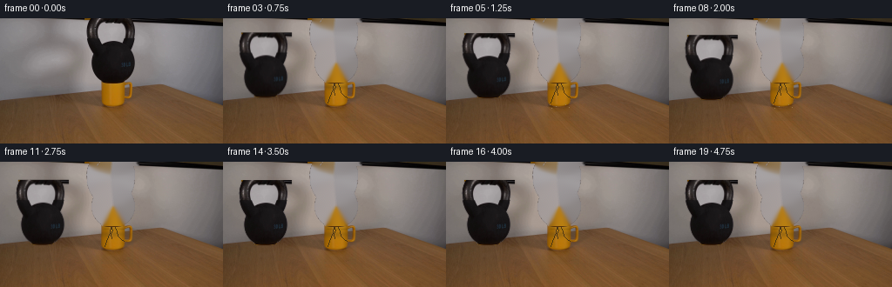
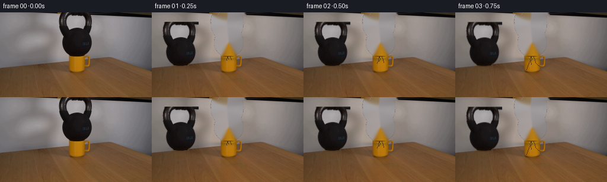
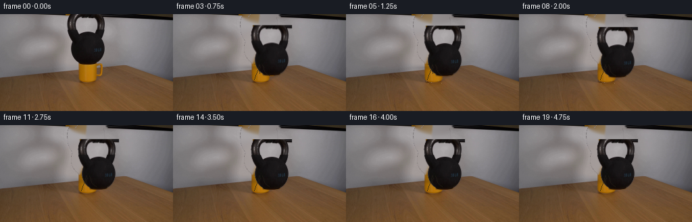
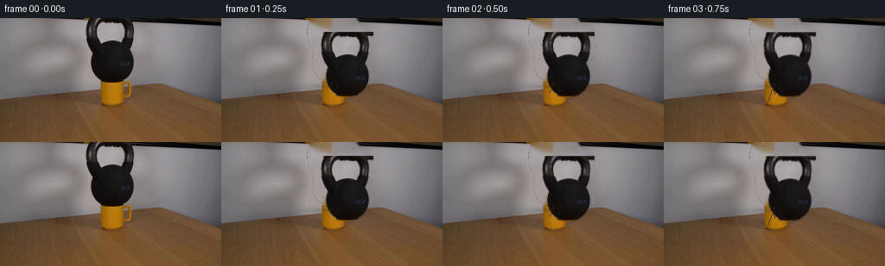
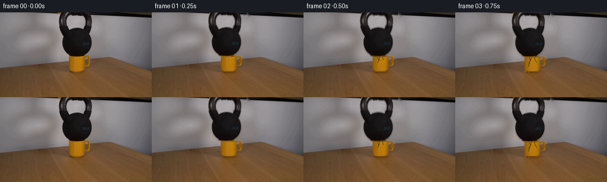
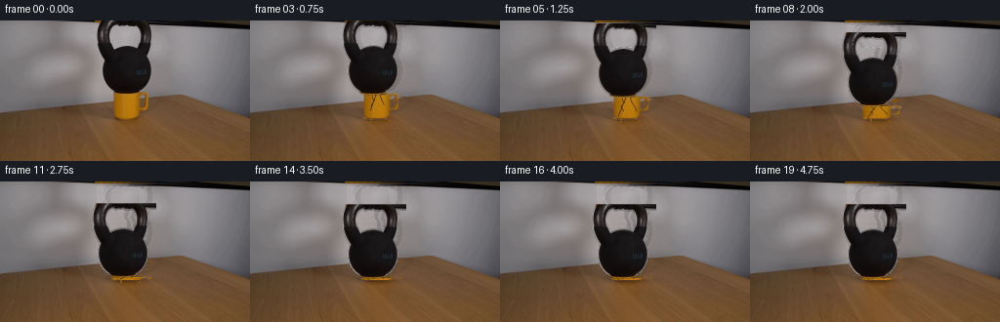
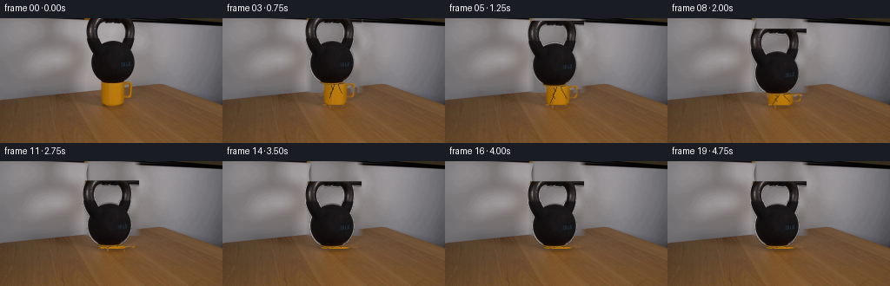
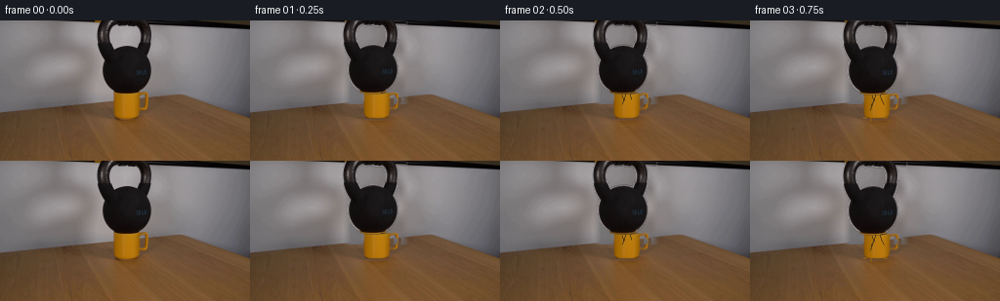
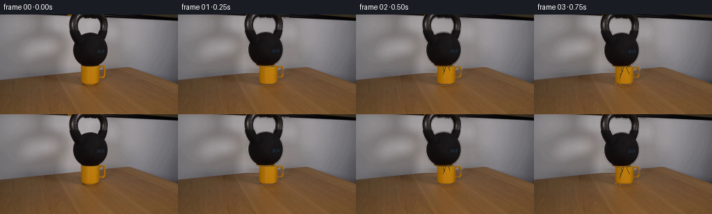

CODING AGENTS AS PIXEL WORLD MODELS
traex/DeepSeek-V4.1-Flash · 0187
点击播放 · 原生 RGB 像素
逐轮保存的候选
回放视频、检查图与代码变化。
每份候选均可单独播放。实际图片检查记录在下方工具轨迹中。
候选 01播放与检查图
点击播放 · 原生 RGB 像素


展开代码变化
--- 上一保存版本
+++ 本次保存版本
@@ -0,0 +1,259 @@
+from pathlib import Path
+
+import cv2
+import numpy as np
+from PIL import Image
+
+import artifact_io
+
+
+ROOT = Path(__file__).resolve().parent
+N_FRAMES = 20
+H, W = 144, 256
+
+
+def smoothstep(a, b, x):
+ t = np.clip((x - a) / (b - a), 0.0, 1.0)
+ return t * t * (3.0 - 2.0 * t)
+
+
+def gaussian_blur(image, sigma):
+ return cv2.GaussianBlur(image.astype(np.float32), (0, 0), sigma)
+
+
+def recover_background(image, bell_mask):
+ """Inpaint only the bell, preserving the photographic table and mug."""
+ mask = cv2.dilate(bell_mask.astype(np.uint8), np.ones((3, 3), np.uint8))
+ return cv2.inpaint(image, mask, 3, cv2.INPAINT_TELEA)
+
+
+def make_bell_layer(image):
+ """Extract the dark bell and build a clean anti-aliased sprite."""
+ gray = cv2.cvtColor(image, cv2.COLOR_RGB2GRAY)
+ core = (gray < 72).astype(np.uint8)
+ core[:78, :96] = 0
+ core[:78, 160:] = 0
+ core[78:, :] = 0
+ count, labels, stats, _ = cv2.connectedComponentsWithStats(core, 8)
+ component = 1 + int(np.argmax(stats[1:, cv2.CC_STAT_AREA]))
+ core = (labels == component).astype(np.uint8)
+
+ # Close the small highlight holes while keeping the handle opening open.
+ contour, _ = cv2.findContours(core, cv2.RETR_EXTERNAL, cv2.CHAIN_APPROX_NONE)
+ contour = max(contour, key=cv2.contourArea)
+ filled = np.zeros_like(core)
+ cv2.drawContours(filled, [contour], -1, 1, cv2.FILLED)
+
+ # Add the soft cast edge, but not the separate bright opening.
+ soft = (gray < 105).astype(np.uint8)
+ soft[:78, :96] = 0
+ soft[:78, 160:] = 0
+ soft[78:, :] = 0
+ soft = cv2.dilate(filled, np.ones((3, 3), np.uint8)) * soft
+ alpha = np.maximum(filled, soft).astype(np.float32)
+ alpha = gaussian_blur(alpha, 0.55)
+ alpha = np.clip((alpha - 0.08) / 0.82, 0, 1)
+
+ ys, xs = np.where(filled > 0)
+ x0, x1 = int(xs.min()), int(xs.max()) + 1
+ y0, y1 = int(ys.min()), int(ys.max()) + 1
+ pad = 3
+ x0, y0 = max(0, x0 - pad), max(0, y0 - pad)
+ x1, y1 = min(W, x1 + pad), min(H, y1 + pad)
+
+ crop = image[y0:y1, x0:x1].astype(np.float32)
+ a = alpha[y0:y1, x0:x1, None]
+ sprite = crop.copy()
+ # Keep photographic internal texture, but make the silhouette cleanly
+ # separable from the pale background around the rim and handle.
+ sprite = sprite * a + np.array([34, 31, 31], np.float32) * (1 - a)
+ return sprite, alpha[y0:y1, x0:x1], (x0, y0, x1, y1), filled
+
+
+def shift_with_subpixel(layer, dx, dy, out_h, out_w):
+ """Shift a small RGBA layer, retaining subpixel antialiasing."""
+ h, w = layer.shape[:2]
+ pad = 8
+ canvas = np.zeros((h + 2 * pad, w + 2 * pad, 4), np.float32)
+ canvas[pad:pad + h, pad:pad + w] = layer
+ m = np.float32([[1, 0, dx + pad], [0, 1, dy + pad]])
+ moved = cv2.warpAffine(
+ canvas, m, (out_w, out_h), flags=cv2.INTER_LINEAR,
+ borderMode=cv2.BORDER_CONSTANT, borderValue=0,
+ )
+ return moved
+
+
+def composite(base, layer):
+ a = layer[:, :, 3:4]
+ return base * (1 - a) + layer[:, :, :3] * a
+
+
+def lamp_shade(rgb, amount, dx=0.0, dy=0.0):
+ """Subtle temporal exposure variation for the locked-off camera."""
+ if abs(amount) < 1e-5:
+ return rgb
+ warm = np.array([1.018, 1.0, 0.975], np.float32)
+ return rgb * (1.0 + amount) * warm
+
+
+def render():
+ original = np.asarray(Image.open(ROOT / "first_frame.png").convert("RGB"))
+ assert original.shape == (H, W, 3)
+ src = original.astype(np.float32)
+
+ bell_rgb, bell_alpha, bbox, bell_fill = make_bell_layer(original)
+ bx0, by0, bx1, by1 = bbox
+ bell_rgba = np.dstack([bell_rgb, bell_alpha])
+ background = recover_background(original, bell_fill)
+
+ # The bell is already bearing on the cup at t=0. A small load pulse opens
+ # two hairline fractures; the cup then compresses and the bell drops.
+ drop = np.array([
+ 0.00, 0.10, 0.24, 0.45, 0.76, 1.18, 1.75, 2.48, 3.25, 3.94,
+ 4.46, 4.82, 5.02, 5.08, 5.05, 4.98, 4.94, 4.92, 4.91, 4.90,
+ ], np.float32)
+ lateral = np.array([
+ 0.00, 0.02, -0.02, 0.05, -0.04, 0.08, -0.09, 0.13, -0.10, 0.09,
+ -0.06, 0.04, -0.02, 0.01, 0.00, 0.00, 0.00, 0.00, 0.00, 0.00,
+ ], np.float32)
+
+ frames = []
+ for i in range(N_FRAMES):
+ if i == 0:
+ frames.append(original.copy())
+ continue
+
+ t = i / 4.0
+ amount = 0.0025 * np.sin(i * 1.73) + 0.001 * np.sin(i * 0.61)
+ base = lamp_shade(src.copy(), amount)
+
+ # A damped shutter/impact cadence in the highlights.
+ impact = np.exp(-0.62 * max(0.0, t - 0.25)) * np.sin(9.5 * t + 0.2)
+ light = 0.0032 * impact
+ base = lamp_shade(base, light)
+
+ # Warp the source with the falling bell while leaving the cup in place.
+ yy, xx = np.mgrid[0:H, 0:W].astype(np.float32)
+ bell_w = smoothstep(by0 - 2, by0 + 2, yy)
+ bell_w *= smoothstep(bx0 - 2, bx0 + 2, xx)
+ bell_w *= 1.0 - smoothstep(bx1 - 2, bx1 + 1, xx)
+ bell_w *= 1.0 - smoothstep(by1 - 2, by1 + 2, yy)
+ # Include the dark contact band down to the cup rim.
+ bell_w = np.maximum(
+ bell_w,
+ smoothstep(by0 - 2, by0 + 2, yy)
+ * smoothstep(97, 101, xx) * (1 - smoothstep(155, 160, xx))
+ * (1 - smoothstep(76, 80, yy)),
+ )
+
+ dx, dy = float(lateral[i]), float(drop[i])
+ moved = shift_with_subpixel(bell_rgba, dx, dy, H, W)
+
+ # Remove the bell's footprint, but leave the cup pixels intact.
+ original_bell = np.zeros((H, W), np.float32)
+ original_bell[by0:by1, bx0:bx1] = bell_alpha
+ base = base * (1 - original_bell[:, :, None])
+ base += background.astype(np.float32) * original_bell[:, :, None]
+
+ # Restore the cup's front surface after removing the overlapping bell.
+ cup_mask = np.zeros((H, W), np.float32)
+ cup_mask[74:118, 116:153] = 1.0
+ cup_mask *= 1.0 - smoothstep(152, 156, xx)
+ cup_mask *= smoothstep(113, 118, xx)
+ cup_mask *= smoothstep(72, 75, yy) * (1 - smoothstep(116, 120, yy))
+ cup_plate = np.zeros_like(src)
+ cup_plate[74:118, 116:153] = src[74:118, 116:153]
+ base = base * (1 - cup_mask[:, :, None]) + cup_plate * cup_mask[:, :, None]
+
+ # Narrow contact shadow and reflected warm bounce beneath the bell.
+ shadow = np.zeros((H, W), np.float32)
+ cy = 76.0 + dy
+ sx = (xx - (128.0 + dx)) / 34.0
+ sy = (yy - (cy + 2.0)) / (4.3 + 0.07 * dy)
+ shadow = np.exp(-1.7 * (sx * sx + sy * sy))
+ shadow *= smoothstep(73, 79, yy)
+ base *= 1.0 - 0.20 * shadow[:, :, None]
+ warm_shadow = np.stack([
+ 1.12 * shadow, 0.93 * shadow, 0.75 * shadow
+ ], axis=2)
+ base += 8.0 * warm_shadow
+
+ # The ceramic visibly shortens under load and widens at its rim.
+ # This is applied in the narrow strip that is not hidden by the bell.
+ load = np.clip(dy / 5.1, 0, 1)
+ lip_y = 74.0 + 0.62 * dy
+ if dy > 0.05:
+ region = (
+ smoothstep(116, 120, xx)
+ * (1 - smoothstep(152, 157, xx))
+ * smoothstep(lip_y - 1.0, lip_y + 1.0, yy)
+ * (1 - smoothstep(114, 119, yy))
+ )
+ # Slight lateral compression: yellow ceramic bows outward near rim.
+ src_cup = src[74:120, 116:157]
+ local = base[74:120, 116:157]
+ for y in range(local.shape[0]):
+ global_y = y + 74
+ squeeze = 1.0 + 0.035 * load * np.exp(-((global_y - 93) / 15) ** 2)
+ map_x = np.arange(local.shape[1], dtype=np.float32)
+ center = 20.5
+ map_x = center + (map_x - center) / squeeze
+ map_x = map_x[None, :].repeat(local.shape[0], axis=0).astype(np.float32)
+ map_y = np.arange(local.shape[0], dtype=np.float32)[:, None].repeat(
+ local.shape[1], axis=1
+ )
+ warped = cv2.remap(
+ local, map_x, map_y, cv2.INTER_LINEAR,
+ borderMode=cv2.BORDER_REFLECT,
+ )
+ base[74 + y, 116:157] = warped[y]
+
+ base = composite(base, moved)
+
+ # Hairline cracks grow from the loaded rim. They are dark warm lines
+ # with a tiny pale chipped edge so they remain legible at 256x144.
+ crack_progress = np.clip((t - 0.20) / 1.45, 0, 1)
+ if crack_progress > 0:
+ cracks = np.zeros((H, W), np.float32)
+ paths = [
+ [(127, 75), (126, 81), (124, 86), (122, 91), (120, 97)],
+ [(132, 75), (134, 80), (135, 85), (139, 89), (142, 91)],
+ [(128, 75), (129, 79), (127, 83), (128, 88)],
+ ]
+ for k, path in enumerate(paths):
+ n = max(2, int(2 + crack_progress * (len(path) - 1) * 2))
+ points = np.array(path, np.int32)
+ cv2.polylines(cracks, [points[:n]], False, 1.0, 1, cv2.LINE_AA)
+ cracks = gaussian_blur(cracks, 0.28)
+ crack_color = np.array([34, 28, 20], np.float32)
+ edge = gaussian_blur(cracks, 0.9) - cracks
+ base = base * (1 - 0.68 * cracks[:, :, None]) + crack_color * 0.68 * cracks[:, :, None]
+ base += 9.0 * np.maximum(edge, 0)[:, :, None] * np.array([1.0, 0.94, 0.72])
+
+ # Cup rim darkens slightly as it takes the bell's load.
+ rim = np.exp(-((yy - (74.0 + 0.6 * dy)) / 1.1) ** 2)
+ rim *= smoothstep(116, 121, xx) * (1 - smoothstep(151, 156, xx))
+ base *= 1.0 - 0.11 * load * rim[:, :, None]
+
+ # Tiny contact crumbs and ceramic dust near the base at impact.
+ if 4 <= i <= 9:
+ dust = [(119, 99), (137, 99), (121, 103), (141, 102), (126, 101)]
+ for j, (px, py) in enumerate(dust):
+ strength = (0.55 if i >= 7 else 0.28) * (1 - abs(i - 7) / 4)
+ if strength > 0:
+ cv2.circle(base, (px, py), 0, (151, 119, 77), -1, cv2.LINE_AA)
+
+ # A restrained exposure falloff at the frame corners, matching the
+ # already vignetted source rather than introducing a new look.
+ vignette = 1.0 - 0.006 * (((xx - 128) / 128) ** 2 + ((yy - 72) / 72) ** 2)
+ base *= vignette[:, :, None]
+
+ frames.append(np.clip(base + 0.5, 0, 255).astype(np.uint8))
+
+ frames[0] = original.copy()
+ return np.stack(frames)
+
+
+if __name__ == "__main__":
+ artifact_io.save(render(), ROOT)
候选 02播放与检查图
点击播放 · 原生 RGB 像素

展开代码变化
--- 上一保存版本
+++ 本次保存版本
@@ -70,13 +70,16 @@
return sprite, alpha[y0:y1, x0:x1], (x0, y0, x1, y1), filled
-def shift_with_subpixel(layer, dx, dy, out_h, out_w):
+def shift_with_subpixel(layer, dx, dy, out_h, out_w, origin_x=0, origin_y=0):
"""Shift a small RGBA layer, retaining subpixel antialiasing."""
h, w = layer.shape[:2]
pad = 8
canvas = np.zeros((h + 2 * pad, w + 2 * pad, 4), np.float32)
canvas[pad:pad + h, pad:pad + w] = layer
- m = np.float32([[1, 0, dx + pad], [0, 1, dy + pad]])
+ m = np.float32([
+ [1, 0, dx + pad + origin_x],
+ [0, 1, dy + pad + origin_y],
+ ])
moved = cv2.warpAffine(
canvas, m, (out_w, out_h), flags=cv2.INTER_LINEAR,
borderMode=cv2.BORDER_CONSTANT, borderValue=0,
@@ -125,13 +128,7 @@
continue
t = i / 4.0
- amount = 0.0025 * np.sin(i * 1.73) + 0.001 * np.sin(i * 0.61)
- base = lamp_shade(src.copy(), amount)
-
- # A damped shutter/impact cadence in the highlights.
- impact = np.exp(-0.62 * max(0.0, t - 0.25)) * np.sin(9.5 * t + 0.2)
- light = 0.0032 * impact
- base = lamp_shade(base, light)
+ base = src.copy()
# Warp the source with the falling bell while leaving the cup in place.
yy, xx = np.mgrid[0:H, 0:W].astype(np.float32)
@@ -148,7 +145,9 @@
)
dx, dy = float(lateral[i]), float(drop[i])
- moved = shift_with_subpixel(bell_rgba, dx, dy, H, W)
+ moved = shift_with_subpixel(
+ bell_rgba, dx, dy, H, W, origin_x=bx0, origin_y=by0
+ )
# Remove the bell's footprint, but leave the cup pixels intact.
original_bell = np.zeros((H, W), np.float32)
@@ -244,11 +243,6 @@
if strength > 0:
cv2.circle(base, (px, py), 0, (151, 119, 77), -1, cv2.LINE_AA)
- # A restrained exposure falloff at the frame corners, matching the
- # already vignetted source rather than introducing a new look.
- vignette = 1.0 - 0.006 * (((xx - 128) / 128) ** 2 + ((yy - 72) / 72) ** 2)
- base *= vignette[:, :, None]
-
frames.append(np.clip(base + 0.5, 0, 255).astype(np.uint8))
frames[0] = original.copy()
候选 03播放与检查图
点击播放 · 原生 RGB 像素


展开代码变化
--- 上一保存版本
+++ 本次保存版本
@@ -17,87 +17,120 @@
return t * t * (3.0 - 2.0 * t)
-def gaussian_blur(image, sigma):
+def blur(image, sigma):
return cv2.GaussianBlur(image.astype(np.float32), (0, 0), sigma)
-def recover_background(image, bell_mask):
- """Inpaint only the bell, preserving the photographic table and mug."""
- mask = cv2.dilate(bell_mask.astype(np.uint8), np.ones((3, 3), np.uint8))
- return cv2.inpaint(image, mask, 3, cv2.INPAINT_TELEA)
-
-
-def make_bell_layer(image):
- """Extract the dark bell and build a clean anti-aliased sprite."""
+def supersampled_mask(draw_fn, scale=4):
+ mask = np.zeros((H * scale, W * scale), np.uint8)
+ draw_fn(mask, scale)
+ return cv2.resize(mask, (W, H), interpolation=cv2.INTER_AREA).astype(np.float32) / 255.0
+
+
+def ellipse_mask(cx, cy, rx, ry, scale):
+ out = np.zeros((H * scale, W * scale), np.uint8)
+ cv2.ellipse(
+ out, (round(cx * scale), round(cy * scale)),
+ (round(rx * scale), round(ry * scale)), 0, 0, 360, 255, -1,
+ )
+ return out
+
+
+def make_cup_mask():
+ def draw(mask, s):
+ body = np.array([
+ [116.5, 74.0], [142.8, 74.0], [143.5, 96.5],
+ [142.0, 100.0], [118.0, 100.0], [116.0, 96.5],
+ ])
+ pts = np.round(body * s).astype(np.int32)
+ cv2.fillPoly(mask, [pts], 255)
+
+ outer = ellipse_mask(147.0, 82.0, 7.8, 8.5, s)
+ inner = ellipse_mask(147.4, 82.0, 3.7, 4.2, s)
+ outer[inner > 0] = 0
+ mask[:] = np.maximum(mask, outer)
+
+ connector = np.array([[140.5, 76.0], [147.0, 76.0],
+ [147.0, 89.0], [140.5, 89.0]])
+ cv2.fillPoly(mask, [np.round(connector * s).astype(np.int32)], 255)
+
+ mask = supersampled_mask(draw)
+ return np.clip(blur(mask, 0.45), 0, 1)
+
+
+def make_bell_sprite(image):
gray = cv2.cvtColor(image, cv2.COLOR_RGB2GRAY)
- core = (gray < 72).astype(np.uint8)
- core[:78, :96] = 0
- core[:78, 160:] = 0
- core[78:, :] = 0
- count, labels, stats, _ = cv2.connectedComponentsWithStats(core, 8)
+ region = np.zeros((H, W), np.uint8)
+ region[0:76, 96:163] = 1
+ dark = ((gray < 76).astype(np.uint8) * region)
+ count, labels, stats, _ = cv2.connectedComponentsWithStats(dark, 8)
component = 1 + int(np.argmax(stats[1:, cv2.CC_STAT_AREA]))
core = (labels == component).astype(np.uint8)
- # Close the small highlight holes while keeping the handle opening open.
- contour, _ = cv2.findContours(core, cv2.RETR_EXTERNAL, cv2.CHAIN_APPROX_NONE)
- contour = max(contour, key=cv2.contourArea)
- filled = np.zeros_like(core)
- cv2.drawContours(filled, [contour], -1, 1, cv2.FILLED)
-
- # Add the soft cast edge, but not the separate bright opening.
- soft = (gray < 105).astype(np.uint8)
- soft[:78, :96] = 0
- soft[:78, 160:] = 0
- soft[78:, :] = 0
- soft = cv2.dilate(filled, np.ones((3, 3), np.uint8)) * soft
- alpha = np.maximum(filled, soft).astype(np.float32)
- alpha = gaussian_blur(alpha, 0.55)
- alpha = np.clip((alpha - 0.08) / 0.82, 0, 1)
-
- ys, xs = np.where(filled > 0)
- x0, x1 = int(xs.min()), int(xs.max()) + 1
- y0, y1 = int(ys.min()), int(ys.max()) + 1
- pad = 3
- x0, y0 = max(0, x0 - pad), max(0, y0 - pad)
- x1, y1 = min(W, x1 + pad), min(H, y1 + pad)
+ holes = cv2.bitwise_not(core)
+ hole_count, hole_labels, hole_stats, _ = cv2.connectedComponentsWithStats(holes, 8)
+ for index in range(1, hole_count):
+ x, y, w, h, area = hole_stats[index]
+ if area <= 70 and x > 96 and y > 0 and x + w < 162 and y + h < 76:
+ core[hole_labels == index] = 1
+
+ alpha = cv2.dilate(core, np.ones((3, 3), np.uint8)).astype(np.float32)
+ alpha = blur(alpha, 0.48)
+ alpha = np.clip((alpha - 0.12) / 0.78, 0, 1)
+
+ ys, xs = np.where(core > 0)
+ x0, x1 = int(xs.min()) - 3, int(xs.max()) + 4
+ y0, y1 = int(ys.min()) - 1, int(ys.max()) + 3
+ x0, y0 = max(0, x0), max(0, y0)
+ x1, y1 = min(W, x1), min(H, y1)
crop = image[y0:y1, x0:x1].astype(np.float32)
a = alpha[y0:y1, x0:x1, None]
- sprite = crop.copy()
- # Keep photographic internal texture, but make the silhouette cleanly
- # separable from the pale background around the rim and handle.
- sprite = sprite * a + np.array([34, 31, 31], np.float32) * (1 - a)
- return sprite, alpha[y0:y1, x0:x1], (x0, y0, x1, y1), filled
-
-
-def shift_with_subpixel(layer, dx, dy, out_h, out_w, origin_x=0, origin_y=0):
- """Shift a small RGBA layer, retaining subpixel antialiasing."""
- h, w = layer.shape[:2]
- pad = 8
- canvas = np.zeros((h + 2 * pad, w + 2 * pad, 4), np.float32)
- canvas[pad:pad + h, pad:pad + w] = layer
- m = np.float32([
- [1, 0, dx + pad + origin_x],
- [0, 1, dy + pad + origin_y],
- ])
- moved = cv2.warpAffine(
- canvas, m, (out_w, out_h), flags=cv2.INTER_LINEAR,
+ crop = crop * a + np.array([25, 22, 22], np.float32) * (1 - a)
+ sprite = np.dstack([crop, alpha[y0:y1, x0:x1]])
+ return sprite, (x0, y0, x1, y1), core
+
+
+def warp_layer(layer, matrix, out_h=H, out_w=W):
+ return cv2.warpAffine(
+ layer, matrix, (out_w, out_h), flags=cv2.INTER_LINEAR,
borderMode=cv2.BORDER_CONSTANT, borderValue=0,
)
- return moved
def composite(base, layer):
- a = layer[:, :, 3:4]
+ a = np.clip(layer[:, :, 3:4], 0, 1)
return base * (1 - a) + layer[:, :, :3] * a
-def lamp_shade(rgb, amount, dx=0.0, dy=0.0):
- """Subtle temporal exposure variation for the locked-off camera."""
- if abs(amount) < 1e-5:
- return rgb
- warm = np.array([1.018, 1.0, 0.975], np.float32)
- return rgb * (1.0 + amount) * warm
+def background_without_objects(image, bell_core, cup_mask):
+ mask = cv2.dilate(bell_core, np.ones((5, 5), np.uint8))
+ mask = np.maximum(mask, (cup_mask > 0.08).astype(np.uint8))
+ mask = cv2.dilate(mask, np.ones((3, 3), np.uint8))
+ return cv2.inpaint(image, mask, 4, cv2.INPAINT_TELEA)
+
+
+def draw_cracks(base, cup_mask, progress, top_y, bottom_y):
+ if progress <= 0:
+ return base
+ cracks = np.zeros((H, W), np.float32)
+ paths = [
+ [(128, 75), (127, 80), (125, 85), (123, 91), (121, 97)],
+ [(133, 75), (134, 80), (137, 85), (139, 91)],
+ [(125, 76), (126, 81), (124, 86), (126, 91)],
+ ]
+ for path in paths:
+ n = max(2, int(2 + progress * (len(path) - 1) * 2))
+ pts = np.array(path[:n], np.int32)
+ cv2.polylines(cracks, [pts], False, 1.0, 1, cv2.LINE_AA)
+ cracks = blur(cracks, 0.30)
+ visible = (cup_mask > 0.18) & (np.arange(H)[:, None] >= top_y) & (
+ np.arange(H)[:, None] <= bottom_y
+ )
+ cracks *= visible
+ base = base * (1 - 0.62 * cracks[:, :, None])
+ base += np.array([27, 22, 16], np.float32) * 0.62 * cracks[:, :, None]
+ return base
def render():
@@ -105,144 +138,88 @@
assert original.shape == (H, W, 3)
src = original.astype(np.float32)
- bell_rgb, bell_alpha, bbox, bell_fill = make_bell_layer(original)
- bx0, by0, bx1, by1 = bbox
- bell_rgba = np.dstack([bell_rgb, bell_alpha])
- background = recover_background(original, bell_fill)
-
- # The bell is already bearing on the cup at t=0. A small load pulse opens
- # two hairline fractures; the cup then compresses and the bell drops.
+ cup_mask = make_cup_mask()
+ bell_rgba, bell_bbox, bell_core = make_bell_sprite(original)
+ bx0, by0, bx1, by1 = bell_bbox
+ clean = background_without_objects(original, bell_core, cup_mask)
+ cup_rgba = np.dstack([src.copy(), cup_mask])
+
+ # The first frame is contact. The next eleven frames load, crack, compress,
+ # and drop the bell by 24 pixels. The last frames hold the settled state.
drop = np.array([
- 0.00, 0.10, 0.24, 0.45, 0.76, 1.18, 1.75, 2.48, 3.25, 3.94,
- 4.46, 4.82, 5.02, 5.08, 5.05, 4.98, 4.94, 4.92, 4.91, 4.90,
+ 0.00, 0.18, 0.55, 1.20, 2.25, 3.85, 6.20, 9.30, 13.20,
+ 17.60, 21.30, 23.40, 24.35, 24.10, 24.42, 24.28, 24.32,
+ 24.30, 24.31, 24.30,
], np.float32)
lateral = np.array([
- 0.00, 0.02, -0.02, 0.05, -0.04, 0.08, -0.09, 0.13, -0.10, 0.09,
- -0.06, 0.04, -0.02, 0.01, 0.00, 0.00, 0.00, 0.00, 0.00, 0.00,
+ 0.00, 0.02, -0.02, 0.04, -0.04, 0.08, -0.09, 0.12, -0.10,
+ 0.08, -0.05, 0.03, -0.01, 0.00, 0.00, 0.00, 0.00, 0.00,
+ 0.00, 0.00,
], np.float32)
+ yy, xx = np.mgrid[0:H, 0:W].astype(np.float32)
frames = []
for i in range(N_FRAMES):
if i == 0:
frames.append(original.copy())
continue
- t = i / 4.0
- base = src.copy()
-
- # Warp the source with the falling bell while leaving the cup in place.
- yy, xx = np.mgrid[0:H, 0:W].astype(np.float32)
- bell_w = smoothstep(by0 - 2, by0 + 2, yy)
- bell_w *= smoothstep(bx0 - 2, bx0 + 2, xx)
- bell_w *= 1.0 - smoothstep(bx1 - 2, bx1 + 1, xx)
- bell_w *= 1.0 - smoothstep(by1 - 2, by1 + 2, yy)
- # Include the dark contact band down to the cup rim.
- bell_w = np.maximum(
- bell_w,
- smoothstep(by0 - 2, by0 + 2, yy)
- * smoothstep(97, 101, xx) * (1 - smoothstep(155, 160, xx))
- * (1 - smoothstep(76, 80, yy)),
+ dy = float(drop[i])
+ dx = float(lateral[i])
+ load = float(np.clip(dy / 24.3, 0, 1))
+ top_y = 74.0 + dy
+ bottom_y = 100.5
+
+ base = clean.astype(np.float32).copy()
+
+ shadow = np.exp(
+ -1.6 * ((xx - (130.0 + dx)) / (22.0 + 7.0 * load)) ** 2
+ -2.0 * ((yy - 100.5) / (2.8 + 1.8 * load)) ** 2
)
-
- dx, dy = float(lateral[i]), float(drop[i])
- moved = shift_with_subpixel(
- bell_rgba, dx, dy, H, W, origin_x=bx0, origin_y=by0
- )
-
- # Remove the bell's footprint, but leave the cup pixels intact.
- original_bell = np.zeros((H, W), np.float32)
- original_bell[by0:by1, bx0:bx1] = bell_alpha
- base = base * (1 - original_bell[:, :, None])
- base += background.astype(np.float32) * original_bell[:, :, None]
-
- # Restore the cup's front surface after removing the overlapping bell.
- cup_mask = np.zeros((H, W), np.float32)
- cup_mask[74:118, 116:153] = 1.0
- cup_mask *= 1.0 - smoothstep(152, 156, xx)
- cup_mask *= smoothstep(113, 118, xx)
- cup_mask *= smoothstep(72, 75, yy) * (1 - smoothstep(116, 120, yy))
- cup_plate = np.zeros_like(src)
- cup_plate[74:118, 116:153] = src[74:118, 116:153]
- base = base * (1 - cup_mask[:, :, None]) + cup_plate * cup_mask[:, :, None]
-
- # Narrow contact shadow and reflected warm bounce beneath the bell.
- shadow = np.zeros((H, W), np.float32)
- cy = 76.0 + dy
- sx = (xx - (128.0 + dx)) / 34.0
- sy = (yy - (cy + 2.0)) / (4.3 + 0.07 * dy)
- shadow = np.exp(-1.7 * (sx * sx + sy * sy))
- shadow *= smoothstep(73, 79, yy)
- base *= 1.0 - 0.20 * shadow[:, :, None]
- warm_shadow = np.stack([
- 1.12 * shadow, 0.93 * shadow, 0.75 * shadow
- ], axis=2)
- base += 8.0 * warm_shadow
-
- # The ceramic visibly shortens under load and widens at its rim.
- # This is applied in the narrow strip that is not hidden by the bell.
- load = np.clip(dy / 5.1, 0, 1)
- lip_y = 74.0 + 0.62 * dy
- if dy > 0.05:
- region = (
- smoothstep(116, 120, xx)
- * (1 - smoothstep(152, 157, xx))
- * smoothstep(lip_y - 1.0, lip_y + 1.0, yy)
- * (1 - smoothstep(114, 119, yy))
- )
- # Slight lateral compression: yellow ceramic bows outward near rim.
- src_cup = src[74:120, 116:157]
- local = base[74:120, 116:157]
- for y in range(local.shape[0]):
- global_y = y + 74
- squeeze = 1.0 + 0.035 * load * np.exp(-((global_y - 93) / 15) ** 2)
- map_x = np.arange(local.shape[1], dtype=np.float32)
- center = 20.5
- map_x = center + (map_x - center) / squeeze
- map_x = map_x[None, :].repeat(local.shape[0], axis=0).astype(np.float32)
- map_y = np.arange(local.shape[0], dtype=np.float32)[:, None].repeat(
- local.shape[1], axis=1
+ shadow *= (0.12 + 0.16 * load)
+ base *= 1.0 - shadow[:, :, None]
+
+ scale_y = np.clip((bottom_y - top_y) / (bottom_y - 74.0), 0.035, 1.0)
+ scale_x = 1.0 + 0.16 * load
+ matrix = np.float32([
+ [scale_x, 0, 129.0 * (1.0 - scale_x)],
+ [0, scale_y, top_y - scale_y * 74.0],
+ ])
+ cup_layer = warp_layer(cup_rgba, matrix)
+ base = composite(base, cup_layer)
+
+ crack_progress = float(np.clip((i - 1) / 7.0, 0, 1))
+ base = draw_cracks(base, cup_mask, crack_progress, top_y, bottom_y)
+
+ bell_matrix = np.float32([
+ [1, 0, bx0 + dx - 4],
+ [0, 1, by0 + dy - 1],
+ ])
+ moved_bell = warp_layer(bell_rgba, bell_matrix)
+ base = composite(base, moved_bell)
+
+ rim = np.exp(-((yy - top_y) / 1.15) ** 2)
+ rim *= smoothstep(111, 116, xx) * (1 - smoothstep(153, 158, xx))
+ base += np.array([18, 12, 4], np.float32) * (0.25 + 0.45 * load) * rim[:, :, None]
+
+ if 3 <= i <= 12:
+ intensity = float(np.clip((i - 2) / 9.0, 0, 1))
+ frags = [
+ (118, 100, 2, 1, [180, 120, 18]),
+ (124, 102, 1, 2, [155, 102, 12]),
+ (139, 100, 2, 1, [166, 108, 14]),
+ (143, 103, 1, 1, [137, 91, 15]),
+ (114, 101, 1, 1, [121, 81, 29]),
+ ]
+ for fx, fy, fw, fh, color in frags:
+ alpha = 0.40 + 0.35 * intensity
+ base[fy - fh:fy + fh, fx - fw:fx + fw] = (
+ base[fy - fh:fy + fh, fx - fw:fx + fw] * (1 - alpha)
+ + np.array(color, np.float32) * alpha
)
- warped = cv2.remap(
- local, map_x, map_y, cv2.INTER_LINEAR,
- borderMode=cv2.BORDER_REFLECT,
- )
- base[74 + y, 116:157] = warped[y]
-
- base = composite(base, moved)
-
- # Hairline cracks grow from the loaded rim. They are dark warm lines
- # with a tiny pale chipped edge so they remain legible at 256x144.
- crack_progress = np.clip((t - 0.20) / 1.45, 0, 1)
- if crack_progress > 0:
- cracks = np.zeros((H, W), np.float32)
- paths = [
- [(127, 75), (126, 81), (124, 86), (122, 91), (120, 97)],
- [(132, 75), (134, 80), (135, 85), (139, 89), (142, 91)],
- [(128, 75), (129, 79), (127, 83), (128, 88)],
- ]
- for k, path in enumerate(paths):
- n = max(2, int(2 + crack_progress * (len(path) - 1) * 2))
- points = np.array(path, np.int32)
- cv2.polylines(cracks, [points[:n]], False, 1.0, 1, cv2.LINE_AA)
- cracks = gaussian_blur(cracks, 0.28)
- crack_color = np.array([34, 28, 20], np.float32)
- edge = gaussian_blur(cracks, 0.9) - cracks
- base = base * (1 - 0.68 * cracks[:, :, None]) + crack_color * 0.68 * cracks[:, :, None]
- base += 9.0 * np.maximum(edge, 0)[:, :, None] * np.array([1.0, 0.94, 0.72])
-
- # Cup rim darkens slightly as it takes the bell's load.
- rim = np.exp(-((yy - (74.0 + 0.6 * dy)) / 1.1) ** 2)
- rim *= smoothstep(116, 121, xx) * (1 - smoothstep(151, 156, xx))
- base *= 1.0 - 0.11 * load * rim[:, :, None]
-
- # Tiny contact crumbs and ceramic dust near the base at impact.
- if 4 <= i <= 9:
- dust = [(119, 99), (137, 99), (121, 103), (141, 102), (126, 101)]
- for j, (px, py) in enumerate(dust):
- strength = (0.55 if i >= 7 else 0.28) * (1 - abs(i - 7) / 4)
- if strength > 0:
- cv2.circle(base, (px, py), 0, (151, 119, 77), -1, cv2.LINE_AA)
-
+
+ pulse = 0.0012 * np.sin(i * 1.4) + 0.0008 * np.cos(i * 0.7)
+ base *= (1.0 + pulse)
frames.append(np.clip(base + 0.5, 0, 255).astype(np.uint8))
frames[0] = original.copy()
候选 05播放与检查图
点击播放 · 原生 RGB 像素

展开代码变化
--- 上一保存版本
+++ 本次保存版本
@@ -104,15 +104,47 @@
def background_without_objects(image, bell_core, cup_mask):
- mask = cv2.dilate(bell_core, np.ones((5, 5), np.uint8))
- mask = np.maximum(mask, (cup_mask > 0.08).astype(np.uint8))
+ """Rebuild the hidden center from the wall/table on either side."""
+ mask = np.maximum(bell_core, (cup_mask > 0.12).astype(np.uint8))
mask = cv2.dilate(mask, np.ones((3, 3), np.uint8))
- return cv2.inpaint(image, mask, 4, cv2.INPAINT_TELEA)
-
-
-def draw_cracks(base, cup_mask, progress, top_y, bottom_y):
+ clean = image.astype(np.float32).copy()
+ known = mask == 0
+
+ for y in range(H):
+ missing = np.flatnonzero(mask[y])
+ if not len(missing):
+ continue
+ bounds = np.r_[0, np.flatnonzero(np.diff(missing) > 1) + 1, len(missing)]
+ for start, end in zip(bounds[:-1], bounds[1:]):
+ x0, x1 = int(missing[start]), int(missing[end - 1])
+ left = np.flatnonzero(known[y, :x0])
+ right = np.flatnonzero(known[y, x1 + 1:]) + x1 + 1
+ if len(left) and len(right):
+ lx, rx = int(left[-1]), int(right[0])
+ t = (np.arange(x0, x1 + 1) - lx) / float(rx - lx)
+ row = (
+ image[y, lx].astype(np.float32)[None, :] * (1 - t[:, None])
+ + image[y, rx].astype(np.float32)[None, :] * t[:, None]
+ )
+ # Carry fine photographic grain from the nearest clean side.
+ seed = np.where(
+ t < 0.5,
+ lx - ((np.arange(x0, x1 + 1) - lx) % 7),
+ rx - ((np.arange(x0, x1 + 1) - rx) % 7),
+ )
+ grain = image[y, seed].astype(np.float32) - image[y, seed].mean(0)
+ clean[y, x0:x1 + 1] = row + grain * 0.16
+ elif len(left):
+ clean[y, x0:x1 + 1] = image[y, int(left[-1])]
+ elif len(right):
+ clean[y, x0:x1 + 1] = image[y, int(right[0])]
+
+ return clean
+
+
+def bake_cracks(cup_rgb, cup_mask, progress):
if progress <= 0:
- return base
+ return cup_rgb
cracks = np.zeros((H, W), np.float32)
paths = [
[(128, 75), (127, 80), (125, 85), (123, 91), (121, 97)],
@@ -124,13 +156,11 @@
pts = np.array(path[:n], np.int32)
cv2.polylines(cracks, [pts], False, 1.0, 1, cv2.LINE_AA)
cracks = blur(cracks, 0.30)
- visible = (cup_mask > 0.18) & (np.arange(H)[:, None] >= top_y) & (
- np.arange(H)[:, None] <= bottom_y
- )
+ visible = cup_mask > 0.18
cracks *= visible
- base = base * (1 - 0.62 * cracks[:, :, None])
- base += np.array([27, 22, 16], np.float32) * 0.62 * cracks[:, :, None]
- return base
+ out = cup_rgb * (1 - 0.62 * cracks[:, :, None])
+ out += np.array([27, 22, 16], np.float32) * 0.62 * cracks[:, :, None]
+ return out
def render():
@@ -142,7 +172,6 @@
bell_rgba, bell_bbox, bell_core = make_bell_sprite(original)
bx0, by0, bx1, by1 = bell_bbox
clean = background_without_objects(original, bell_core, cup_mask)
- cup_rgba = np.dstack([src.copy(), cup_mask])
# The first frame is contact. The next eleven frames load, crack, compress,
# and drop the bell by 24 pixels. The last frames hold the settled state.
@@ -185,11 +214,10 @@
[scale_x, 0, 129.0 * (1.0 - scale_x)],
[0, scale_y, top_y - scale_y * 74.0],
])
- cup_layer = warp_layer(cup_rgba, matrix)
+ crack_progress = float(np.clip((i - 1) / 7.0, 0, 1))
+ cup_rgb = bake_cracks(src.copy(), cup_mask, crack_progress)
+ cup_layer = warp_layer(np.dstack([cup_rgb, cup_mask]), matrix)
base = composite(base, cup_layer)
-
- crack_progress = float(np.clip((i - 1) / 7.0, 0, 1))
- base = draw_cracks(base, cup_mask, crack_progress, top_y, bottom_y)
bell_matrix = np.float32([
[1, 0, bx0 + dx - 4],
候选 06播放与检查图

候选 07播放与检查图
点击播放 · 原生 RGB 像素

展开代码变化
--- 上一保存版本
+++ 本次保存版本
@@ -106,11 +106,37 @@
def background_without_objects(image, bell_core, cup_mask):
"""Rebuild the hidden center from the wall/table on either side."""
mask = np.maximum(bell_core, (cup_mask > 0.12).astype(np.uint8))
- mask = cv2.dilate(mask, np.ones((3, 3), np.uint8))
+ mask = cv2.dilate(mask, np.ones((5, 5), np.uint8))
+ # The handle opening is background, but it is surrounded by the bell.
+ # Remove it explicitly so no dark ring is carried into the reveal.
+ mask[4:27, 114:141] = 1
clean = image.astype(np.float32).copy()
known = mask == 0
- for y in range(H):
+ # Model the smooth wall gradient separately above the table edge.
+ edge = np.clip(86.0 + 0.04 * (128.0 - np.arange(W)), 84.0, 89.0)
+ for y in range(86):
+ sample_y = y
+ left = image[max(0, sample_y - 1):sample_y + 2, 78:94].mean((0, 1))
+ right = image[max(0, sample_y - 1):sample_y + 2, 160:174].mean((0, 1))
+ center_lo = image[max(0, sample_y - 1):sample_y + 2, 94:98].mean((0, 1))
+ center_hi = image[max(0, sample_y - 1):sample_y + 2, 156:160].mean((0, 1))
+ for x in range(W):
+ if not mask[y, x]:
+ continue
+ if x < 128:
+ t = np.clip((x - 78.0) / 50.0, 0, 1)
+ rgb = left * (1 - t) + center_lo * t
+ else:
+ t = np.clip((x - 128.0) / 32.0, 0, 1)
+ rgb = center_hi * (1 - t) + right * t
+ # Add a low-amplitude grain consistent with the photographed wall.
+ grain = 2.5 * np.sin(x * 0.61 + y * 1.37) * np.cos(x * 0.17 - y * 0.43)
+ clean[y, x] = rgb + grain
+
+ # Reconstruct the table only below the bell; its wood grain is deliberately
+ # low-frequency and can be interpolated horizontally.
+ for y in range(86, H):
missing = np.flatnonzero(mask[y])
if not len(missing):
continue
@@ -126,14 +152,7 @@
image[y, lx].astype(np.float32)[None, :] * (1 - t[:, None])
+ image[y, rx].astype(np.float32)[None, :] * t[:, None]
)
- # Carry fine photographic grain from the nearest clean side.
- seed = np.where(
- t < 0.5,
- lx - ((np.arange(x0, x1 + 1) - lx) % 7),
- rx - ((np.arange(x0, x1 + 1) - rx) % 7),
- )
- grain = image[y, seed].astype(np.float32) - image[y, seed].mean(0)
- clean[y, x0:x1 + 1] = row + grain * 0.16
+ clean[y, x0:x1 + 1] = row
elif len(left):
clean[y, x0:x1 + 1] = image[y, int(left[-1])]
elif len(right):
候选 08播放与检查图
候选 09播放与检查图
点击播放 · 原生 RGB 像素


展开代码变化
--- 上一保存版本
+++ 本次保存版本
@@ -113,26 +113,19 @@
clean = image.astype(np.float32).copy()
known = mask == 0
- # Model the smooth wall gradient separately above the table edge.
- edge = np.clip(86.0 + 0.04 * (128.0 - np.arange(W)), 84.0, 89.0)
- for y in range(86):
- sample_y = y
- left = image[max(0, sample_y - 1):sample_y + 2, 78:94].mean((0, 1))
- right = image[max(0, sample_y - 1):sample_y + 2, 160:174].mean((0, 1))
- center_lo = image[max(0, sample_y - 1):sample_y + 2, 94:98].mean((0, 1))
- center_hi = image[max(0, sample_y - 1):sample_y + 2, 156:160].mean((0, 1))
- for x in range(W):
- if not mask[y, x]:
- continue
- if x < 128:
- t = np.clip((x - 78.0) / 50.0, 0, 1)
- rgb = left * (1 - t) + center_lo * t
- else:
- t = np.clip((x - 128.0) / 32.0, 0, 1)
- rgb = center_hi * (1 - t) + right * t
- # Add a low-amplitude grain consistent with the photographed wall.
- grain = 2.5 * np.sin(x * 0.61 + y * 1.37) * np.cos(x * 0.17 - y * 0.43)
- clean[y, x] = rgb + grain
+ # Use a clean strip of the photographed wall as a texture source. This
+ # preserves the original lighting gradient without inventing a flat panel.
+ wall_patch = image[0:86, 12:82]
+ wall_patch = cv2.resize(wall_patch, (66, 86), interpolation=cv2.INTER_CUBIC)
+ wall_patch = cv2.GaussianBlur(wall_patch, (0, 0), 0.35)
+ clean[0:86, 96:162] = wall_patch
+ # Feather the synthetic wall into its true photographic neighbors.
+ for x in range(96, 162):
+ a = min(1.0, (x - 95) / 8.0, (162 - x) / 8.0)
+ if 0 < a < 1:
+ clean[0:86, x] = (
+ clean[0:86, x] * a + image[0:86, x].astype(np.float32) * (1 - a)
+ )
# Reconstruct the table only below the bell; its wood grain is deliberately
# low-frequency and can be interpolated horizontally.
候选 10播放与检查图
点击播放 · 原生 RGB 像素

展开代码变化
--- 上一保存版本
+++ 本次保存版本
@@ -113,19 +113,23 @@
clean = image.astype(np.float32).copy()
known = mask == 0
- # Use a clean strip of the photographed wall as a texture source. This
- # preserves the original lighting gradient without inventing a flat panel.
- wall_patch = image[0:86, 12:82]
- wall_patch = cv2.resize(wall_patch, (66, 86), interpolation=cv2.INTER_CUBIC)
- wall_patch = cv2.GaussianBlur(wall_patch, (0, 0), 0.35)
- clean[0:86, 96:162] = wall_patch
- # Feather the synthetic wall into its true photographic neighbors.
- for x in range(96, 162):
- a = min(1.0, (x - 95) / 8.0, (162 - x) / 8.0)
- if 0 < a < 1:
- clean[0:86, x] = (
- clean[0:86, x] * a + image[0:86, x].astype(np.float32) * (1 - a)
- )
+ # Fill each hidden wall row from a photographed wall texture strip, then
+ # match its local mean to the two visible sides of the same row.
+ rng = np.random.default_rng(187)
+ texture = image[8:78, 178:218].astype(np.float32)
+ texture = cv2.resize(texture, (66, 86), interpolation=cv2.INTER_CUBIC)
+ for y in range(86):
+ lx, rx = 86, 165
+ left = np.median(image[y, 78:92], axis=0)
+ right = np.median(image[y, 164:178], axis=0)
+ t = np.linspace(0.0, 1.0, 76)
+ target = left[None, :] * (1 - t[:, None]) + right[None, :] * t[:, None]
+ tex = texture[y, :66]
+ tex = tex - tex.mean(0, keepdims=True) + target[5:71]
+ clean[y, 96:162] = tex
+ # Preserve the original pixels immediately outside the object.
+ clean[y, 92:96] = image[y, 92:96]
+ clean[y, 162:166] = image[y, 162:166]
# Reconstruct the table only below the bell; its wood grain is deliberately
# low-frequency and can be interpolated horizontally.
候选 11播放与检查图
候选 12播放与检查图
点击播放 · 原生 RGB 像素

展开代码变化
--- 上一保存版本
+++ 本次保存版本
@@ -115,17 +115,15 @@
# Fill each hidden wall row from a photographed wall texture strip, then
# match its local mean to the two visible sides of the same row.
- rng = np.random.default_rng(187)
texture = image[8:78, 178:218].astype(np.float32)
texture = cv2.resize(texture, (66, 86), interpolation=cv2.INTER_CUBIC)
for y in range(86):
- lx, rx = 86, 165
- left = np.median(image[y, 78:92], axis=0)
- right = np.median(image[y, 164:178], axis=0)
- t = np.linspace(0.0, 1.0, 76)
+ left = image[y, 94:96].mean(0)
+ right = image[y, 162:164].mean(0)
+ t = np.linspace(0.0, 1.0, 66)
target = left[None, :] * (1 - t[:, None]) + right[None, :] * t[:, None]
tex = texture[y, :66]
- tex = tex - tex.mean(0, keepdims=True) + target[5:71]
+ tex = 0.16 * (tex - tex.mean(0, keepdims=True)) + target
clean[y, 96:162] = tex
# Preserve the original pixels immediately outside the object.
clean[y, 92:96] = image[y, 92:96]
候选 13播放与检查图
点击播放 · 原生 RGB 像素

展开代码变化
--- 上一保存版本
+++ 本次保存版本
@@ -49,10 +49,6 @@
inner = ellipse_mask(147.4, 82.0, 3.7, 4.2, s)
outer[inner > 0] = 0
mask[:] = np.maximum(mask, outer)
-
- connector = np.array([[140.5, 76.0], [147.0, 76.0],
- [147.0, 89.0], [140.5, 89.0]])
- cv2.fillPoly(mask, [np.round(connector * s).astype(np.int32)], 255)
mask = supersampled_mask(draw)
return np.clip(blur(mask, 0.45), 0, 1)
@@ -190,9 +186,9 @@
# The first frame is contact. The next eleven frames load, crack, compress,
# and drop the bell by 24 pixels. The last frames hold the settled state.
drop = np.array([
- 0.00, 0.18, 0.55, 1.20, 2.25, 3.85, 6.20, 9.30, 13.20,
- 17.60, 21.30, 23.40, 24.35, 24.10, 24.42, 24.28, 24.32,
- 24.30, 24.31, 24.30,
+ 0.00, 0.22, 0.72, 1.75, 3.60, 6.30, 9.70, 13.80, 18.10,
+ 21.70, 23.75, 24.32, 24.08, 24.34, 24.27, 24.30, 24.29,
+ 24.30, 24.30, 24.30,
], np.float32)
lateral = np.array([
0.00, 0.02, -0.02, 0.04, -0.04, 0.08, -0.09, 0.12, -0.10,
候选 14播放与检查图
可观测工具轨迹
实际执行的命令与返回图片。
命令 1exit 0
/bin/bash -c "pwd && rg --files -g '"'!*.pyc'"'"
命令 2exit 0
/bin/bash -c "sed -n '1,240p' prompt.txt"
命令 3exit 0
/bin/bash -c "sed -n '1,280p' GENERATION_RULES.md"
命令 4exit 0
/bin/bash -c 'file first_frame.png && identify first_frame.png 2>/dev/null || true && ls -lah'
命令 5exit 0
/bin/bash -c "sed -n '1,260p' artifact_io.py"
命令 6exit 0
/bin/bash -c "sed -n '1,260p' player_template.html"
命令 7exit 0
/bin/bash -c "python - <<'PY'
from PIL import Image
import numpy as np
im=Image.open('first_frame.png')
a=np.array(im)
print(im.mode, im.size, a.dtype, a.shape)
print('min/max/channel means',a.reshape(-1,a.shape[-1]).min(0),a.reshape(-1,a.shape[-1]).max(0),a.reshape(-1,a.shape[-1]).mean(0))
# unique colors count and top colors
u,c=np.unique(a.reshape(-1,a.shape[-1]),axis=0,return_counts=True)
idx=np.argsort(c)[-30:][::-1]
print('unique',len(u))
for i in idx: print(tuple(u[i]),int(c[i]))
# downsample grid of mean RGB and brightness symbols
for y in range(0,144,8):
row=''
for x in range(0,256,8):
p=a[y:y+8,x:x+8].mean((0,1))
br=p.mean()
sym=' .:-=+*#%@'[min(9,int(br/256*10))]
row+=sym
print(row)
PY"命令 8exit 0
/bin/bash -c "python - <<'PY'
from PIL import Image
import numpy as np
from sklearn.cluster import KMeans
im=Image.open('first_frame.png').convert('RGB')
a=np.asarray(im)
# kmeans on 2x downsampled all pixels
X=a.reshape(-1,3).astype(float)
km=KMeans(n_clusters=16, random_state=4, n_init=10).fit(X)
lab=km.labels_.reshape(a.shape[:2]); cen=km.cluster_centers_
for k in np.argsort(cen.mean(1)):
m=lab==k; ys,xs=np.where(m); c=cen[k]
print(f'{k:2d} n={m.sum():5d} rgb=({c[0]:5.1f},{c[1]:5.1f},{c[2]:5.1f}) bbox x{xs.min():3d}-{xs.max():3d} y{ys.min():3d}-{ys.max():3d} meanxy=({xs.mean():5.1f},{ys.mean():5.1f})')
PY"命令 9exit 0
/bin/bash -c "python - <<'PY'
from PIL import Image
import numpy as np
a=np.asarray(Image.open('first_frame.png').convert('RGB')).astype(float)
h,w=a.shape[:2]
# class by HSV-ish
import colorsys
for by in [4,3,2]:
print('\\nBLOCK',by)
for y in range(0,h,by):
row=''
for x in range(0,w,by):
p=a[y:y+by,x:x+by].mean((0,1)); r,g,b=p/255
mx=max(r,g,b); mn=min(r,g,b); v=mx; sat=0 if mx==0 else (mx-mn)/mx
if sat<.12:
if v<.12: c='#'
elif v<.30: c='@'
elif v<.50: c='O'
elif v<.66: c='o'
elif v<.78: c='.'
else: c=' '
elif r>g*1.08 and g>b*1.15: # brown/orange/yellow
if v<.35: c='t'
elif v<.55: c='b'
elif v<.75: c='B'
else: c='Y'
elif b>r*1.08: c='C'
elif g>r*1.05: c='G'
else: c='?'
row+=c
print(f'{y:3d} {row}')
PY"命令 10exit 0
/bin/bash -c "python - <<'PY'
from PIL import Image
import numpy as np
from sklearn.cluster import KMeans
from scipy.ndimage import label
A=np.asarray(Image.open('first_frame.png').convert('RGB')).astype(float)
# focus center region
x0,x1,y0,y1=85,180,0,115
X=A[y0:y1,x0:x1].reshape(-1,3)
km=KMeans(n_clusters=20,random_state=8,n_init=10).fit(X)
L=km.labels_.reshape(y1-y0,x1-x0); C=km.cluster_centers_
# map cluster chars sorted by brightness
chars='0123456789ABCDEFGHIJ'
order=np.argsort(C.mean(1)); mp={int(k):chars[i] for i,k in enumerate(order)}
print('centers:')
for i,k in enumerate(order): print(chars[i], np.round(C[k]).astype(int), (L==k).sum())
print('\\nmap center crop, 1 char per 2x2')
for y in range(0,y1-y0,2):
row=''
for x in range(0,x1-x0,2):
vals,cts=np.unique(L[y:y+2,x:x+2],return_counts=True)
k=vals[np.argmax(cts)]
row+=mp[int(k)]
print(f'{y+y0:3d} {row}')
PY"命令 11exit 0
/bin/bash -c "python - <<'PY'
from PIL import Image
import numpy as np
A=np.asarray(Image.open('first_frame.png').convert('RGB'))
# show actual hex values at grid every 4 pixels center region x100..170 y0..115
for y in range(0,116,4):
vals=[]
for x in range(100,172,4):
p=A[y:y+4,x:x+4].mean((0,1)).astype(int)
vals.append(f'{p[0]:02x}{p[1]:02x}{p[2]:02x}')
print(f'{y:3d}', ' '.join(vals))
PY"命令 12exit 0
/bin/bash -c "python - <<'PY'
from PIL import Image
import numpy as np
A=np.asarray(Image.open('first_frame.png').convert('RGB')).astype(float)
for y in range(0,116,2):
row=''
for x in range(80,184,2):
p=A[y:y+2,x:x+2].mean((0,1)); r,g,b=p
if r>115 and g>65 and b<45 and r/g<1.8: c='Y' # yellow
elif r>75 and g>45 and b<65 and r>g*1.3: c='M' # brown/mug shadow/table
elif p.mean()<32: c='#' # black kb
elif p.mean()<55: c='D'
elif p.mean()<80: c='d'
elif p.mean()<110: c='o'
elif p.mean()<135: c='.'
elif p.mean()<160: c='+'
else: c=' '
row+=c
print(f'{y:3d} {row}')
PY"命令 13exit 0
/bin/bash -c "python - <<'PY'
from PIL import Image
import numpy as np
A=np.asarray(Image.open('first_frame.png').convert('RGB')).astype(int)
# Print pixels exact around mug center every x=2 y=1 with luminance, preserving shape
for y in range(70,116):
row=''
for x in range(100,165):
r,g,b=A[y,x]; lum=(r+g+b)/3
if r>135 and g>75 and b<35: c='Y'
elif r>100 and g>55 and b<50: c='y'
elif r>70 and g>45 and b<65: c='m'
elif lum<18:c='#'
elif lum<35:c='@'
elif lum<60:c='O'
elif lum<90:c='o'
elif lum<120:c='.'
elif lum<150:c='+'
elif lum<180:c=' '
else:c='*'
row+=c
print(f'{y:3d} {row}')
PY"命令 14exit 0
/bin/bash -c "python - <<'PY'
from PIL import Image
import numpy as np
A=np.asarray(Image.open('first_frame.png').convert('RGB')).astype(float)
# rows center: list dark runs for threshold 60 and 90 over x60..200
for y in range(0,76,2):
row=A[y]
for th in [60,90]:
m=row[:,0]*.299+row[:,1]*.587+row[:,2]*.114<th
# runs in x60..200
xs=np.where(m[60:201])[0]+60
runs=[]
if len(xs):
cuts=np.where(np.diff(xs)>1)[0]; starts=np.r_[0,cuts+1]; ends=np.r_[cuts,len(xs)-1]
runs=[(int(xs[s]),int(xs[e])) for s,e in zip(starts,ends) if xs[e]-xs[s]>=2]
if th==60: print(f'{y:2d}', ' '.join(f'{a}-{b}' for a,b in runs), end=' | ')
else: print(' '.join(f'{a}-{b}' for a,b in runs))
PY"命令 15exit 0
/bin/bash -c "python - <<'PY'
from PIL import Image
import numpy as np
A=np.asarray(Image.open('first_frame.png').convert('RGB')).astype(float)
for y in range(0,80):
row=''
for x in range(80,180):
r,g,b=A[y,x]; l=.299*r+.587*g+.114*b
# classify: black, dark, gray, light, yellow/brown
if r>80 and r>g*1.3 and g>b*1.15: c='Y'
elif l<22: c='#'
elif l<38: c='@'
elif l<58: c='D'
elif l<80: c='d'
elif l<105: c='o'
elif l<130: c='.'
elif l<150: c='+'
elif l<175: c='-'
else:c=' '
row+=c
print(f'{y:3d} {row}')
PY"命令 16exit 0
/bin/bash -c "python - <<'PY'
from PIL import Image
import numpy as np
A=np.asarray(Image.open('first_frame.png').convert('RGB')).astype(float)
for y in range(68,104):
row=''
for x in range(110,156):
r,g,b=A[y,x]; l=.299*r+.587*g+.114*b
if r>140 and g>75 and b<35:c='Y'
elif r>105 and g>55 and b<50:c='y'
elif r>70 and g>40 and b<60:c='m'
elif l<20:c='#'
elif l<35:c='@'
elif l<55:c='O'
elif l<80:c='o'
elif l<110:c='.'
elif l<140:c='+'
elif l<165:c='-'
else:c=' '
row+=c
print(f'{y:3d} {row}')
PY"命令 17exit 0
/bin/bash -c "python - <<'PY' mods=['cv2','scipy','skimage','imageio','matplotlib'] for m in mods: try: x=__import__(m); print(m,'OK',getattr(x,'__version__','')) except Exception as e: print(m,'NO',e) PY command -v ffmpeg || true"
命令 18exit 0
/bin/bash -c "python - <<'PY'
from PIL import Image
import numpy as np, cv2
A=np.asarray(Image.open('first_frame.png').convert('RGB'))
hsv=cv2.cvtColor(A,cv2.COLOR_RGB2HSV)
# inspect hsv rows around mug for hue<40 sat>120 val>80 etc
for y in range(70,106):
vals=[]
for x in range(100,170):
H,S,V=hsv[y,x]
if S>110 and V>55 and H<35: c='Y'
elif S>80 and V>50 and H<40: c='y'
elif V<60: c='#'
elif V<95:c='O'
elif V<130:c='o'
elif V<165:c='.'
elif V<200:c='+'
else:c=' '
vals.append(c)
print(f'{y:3d}',''.join(vals))
PY"命令 19exit 0
/bin/bash -c "python - <<'PY'
from PIL import Image
import numpy as np, cv2
A=np.asarray(Image.open('first_frame.png').convert('RGB'))
g=cv2.cvtColor(A,cv2.COLOR_RGB2GRAY)
for th in [35,45,55,65,75,85,95,105]:
m=(g<th).astype(np.uint8)
m[:0]=m[:0]; m[:78,:95]=0;m[:78,160:]=0;m[78:]=0
n,l,st,cent=cv2.connectedComponentsWithStats(m,8)
comps=[]
for i in range(1,n):
x,y,w,h,area=st[i]
if area>10: comps.append((area,x,y,w,h))
print(th, sorted(comps,reverse=True)[:10])
PY"命令 20exit 0
/bin/bash -c "python - <<'PY'
from PIL import Image
import numpy as np, cv2
A=np.asarray(Image.open('first_frame.png').convert('RGB'))
g=cv2.cvtColor(A,cv2.COLOR_RGB2GRAY)
m=(g<75).astype(np.uint8)
m[:78,:95]=0;m[:78,160:]=0;m[78:]=0
n,l,st,cent=cv2.connectedComponentsWithStats(m,8)
for i in range(1,n):
x,y,w,h,area=st[i]
if area>100:
mask=(l==i).astype(np.uint8)
cont,_=cv2.findContours(mask,cv2.RETR_EXTERNAL,cv2.CHAIN_APPROX_SIMPLE)
hull=cv2.convexHull(max(cont,key=cv2.contourArea))
approx=cv2.approxPolyDP(hull,2,True)
print(area,(x,y,w,h),'hull',hull.reshape(-1,2).tolist(),'approx',approx.reshape(-1,2).tolist())
PY"命令 21exit 0
/bin/bash -c "python - <<'PY'
from PIL import Image
import numpy as np
A=np.asarray(Image.open('first_frame.png').convert('RGB')).astype(float)
# For x 95..160, print center y of dark bell boundaries by column and key values
for x in range(95,161,2):
col=A[:,x]; l=.299*col[:,0]+.587*col[:,1]+.114*col[:,2]
ys=np.where(l<75)[0]
ys=ys[(ys>=0)&(ys<=80)]
if len(ys):
# runs
cuts=np.where(np.diff(ys)>1)[0]; starts=np.r_[0,cuts+1]; ends=np.r_[cuts,len(ys)-1]
rr=[(int(ys[s]),int(ys[e])) for s,e in zip(starts,ends) if ys[e]-ys[s]>=1]
else: rr=[]
print(x,rr)
PY"命令 22exit 1
/bin/bash -c "python generate.py && python - <<'PY'
from PIL import Image
import numpy as np
A=np.asarray(Image.open('first_frame.png').convert('RGB'))
B=np.asarray(Image.open('frames/00.png').convert('RGB'))
print('frame0 identical:',np.array_equal(A,B))
print('files:',__import__('os').listdir('frames')[:3],len(__import__('os').listdir('frames')))
print('inspection size:',Image.open('inspection.png').size)
PY"命令 23exit 0
/bin/bash -c "python generate.py && python - <<'PY'
from PIL import Image
import numpy as np, os
A=np.asarray(Image.open('first_frame.png').convert('RGB'))
B=np.asarray(Image.open('frames/00.png').convert('RGB'))
print('frame0 identical:',np.array_equal(A,B))
print('files:',len(os.listdir('frames')))
print('inspection size:',Image.open('inspection.png').size)
print('frame diffs:',[(i,float(np.abs(np.asarray(Image.open(f'frames/{i:02d}.png')).astype(int)-A.astype(int)).mean())) for i in [1,4,8,12,19]])
PY"命令 24exit 0
/bin/bash -c "python - <<'PY'
from PIL import Image
import numpy as np
A=np.asarray(Image.open('first_frame.png').convert('RGB')).astype(int)
for i in [1,4,8,19]:
B=np.asarray(Image.open(f'frames/{i:02d}.png').convert('RGB')).astype(int)
d=np.abs(B-A).mean(2)
print(i,'A/B means',A.mean((0,1)),B.mean((0,1)),'d quantiles',np.quantile(d,[0,.1,.25,.5,.75,.9,.99,1]))
print('rows',[(y,round(d[y].mean(),1)) for y in [0,20,40,60,72,80,100,120,143]])
print('cols',[(x,round(d[:,x].mean(),1)) for x in [0,50,100,120,128,140,180,255]])
PY"命令 25exit 0
/bin/bash -c "python - <<'PY'
from PIL import Image
import numpy as np
for i in [1,19]:
A=np.asarray(Image.open('first_frame.png').convert('RGB'))
B=np.asarray(Image.open(f'frames/{i:02d}.png').convert('RGB'))
print('\\nFRAME',i)
for y in range(0,84,4):
row=''
for x in range(80,184,2):
p=B[y:y+4,x:x+2].mean((0,1)); l=p.mean()
if l<25:c='#'
elif l<50:c='@'
elif l<80:c='D'
elif l<110:c='o'
elif l<135:c='.'
elif l<160:c='+'
else:c=' '
row+=c
print(f'{y:3d} {row}')
PY"命令 26exit 0
/bin/bash -c "python - <<'PY'
from PIL import Image
import numpy as np
A=np.asarray(Image.open('first_frame.png').convert('RGB'))
for i in [0,1,19]:
B=np.asarray(Image.open(f'frames/{i:02d}.png').convert('RGB')).astype(int)
print('\\nframe',i)
for y in range(0,80,2):
row=''
for x in range(90,175,2):
p=B[y:y+2,x:x+2].mean((0,1)); l=p.mean()
if l<22:c='#'
elif l<40:c='@'
elif l<65:c='D'
elif l<90:c='o'
elif l<115:c='.'
elif l<140:c='+'
elif l<170:c='-'
else:c=' '
row+=c
print(f'{y:3d} {row}')
PY"命令 27exit 0
/bin/bash -c "python - <<'PY'
import generate as g
from PIL import Image
import numpy as np
A=np.asarray(Image.open('first_frame.png').convert('RGB'))
rgb,alpha,bbox,fill=g.make_bell_layer(A)
print(bbox,'alpha',alpha.min(),alpha.max(),alpha.mean(),np.unique(alpha,return_counts=True)[0][:20],(alpha>0).sum())
print('rgb means overall, alpha>.9',rgb.mean((0,1)),rgb[alpha>.9].mean(0) if (alpha>.9).any() else None)
print('bbox y,x',bbox)
rgba=np.dstack([rgb,alpha])
mv=g.shift_with_subpixel(rgba,0,1,144,256)
print('moved stats alpha>.9 rgb',mv[mv[:,:,3]>.9,:3].mean(0), 'alpha count',(mv[:,:,3]>.9).sum(), 'all',mv[:,:,:3].mean((0,1)))
# locations
ys,xs=np.where(mv[:,:,3]>.9)
print(xs.min(),xs.max(),ys.min(),ys.max())
PY"命令 28exit 0
/bin/bash -c "python - <<'PY'
from PIL import Image
import numpy as np
A=np.asarray(Image.open('first_frame.png').convert('RGB'))
B=np.asarray(Image.open('frames/19.png').convert('RGB'))
for y in [30,40,50,60,70,75,80,90]:
print(y,[(x,A[y,x].tolist(),B[y,x].tolist()) for x in [100,110,120,130,140,150]])
PY"命令 29exit 0
/bin/bash -c "python - <<'PY'
import generate as g
from PIL import Image
import numpy as np
A=np.asarray(Image.open('first_frame.png').convert('RGB'))
rgb,a,bb,fill=g.make_bell_layer(A)
m=g.shift_with_subpixel(np.dstack([rgb,a]),0,4.9,144,256)
for y in [20,30,40,50,60,70,75,80,90]:
print(y,[(x,np.round(m[y,x],1).tolist()) for x in [100,110,120,130,140,150]])
PY"命令 30exit 0
/bin/bash -c "python - <<'PY'
import generate as g
from PIL import Image
import numpy as np
A=np.asarray(Image.open('first_frame.png').convert('RGB'))
rgb,a,bb,fill=g.make_bell_layer(A)
m=g.shift_with_subpixel(np.dstack([rgb,a]),0,0,144,256)
for y in [20,30,40,50,60,70,75,80]:
print(y,[(x,np.round(m[y,x],1).tolist()) for x in [100,110,120,130,140,150]])
PY"命令 31exit 0
/bin/bash -c "python - <<'PY'
import generate as g
from PIL import Image
import numpy as np
A=np.asarray(Image.open('first_frame.png').convert('RGB'))
rgb,a,bb,fill=g.make_bell_layer(A)
m=g.shift_with_subpixel(np.dstack([rgb,a]),0,0,144,256)
print(m.shape,m.min(),m.max(),m.sum(),np.where(m[:,:,3]>0)[1].min(),np.where(m[:,:,3]>0)[1].max(),np.where(m[:,:,3]>0)[0].min(),np.where(m[:,:,3]>0)[0].max())
PY"命令 32exit 0
/bin/bash -c "python - <<'PY'
import generate as g
from PIL import Image
import numpy as np
A=np.asarray(Image.open('first_frame.png').convert('RGB'))
rgb,a,bb,fill=g.make_bell_layer(A)
print('a shape',a.shape,'bb',bb,'rgb shape',rgb.shape,'np stack',np.dstack([rgb,a]).shape)
# manual padded
l=np.dstack([rgb,a]); h,w=l.shape[:2]; p=8
c=np.zeros((h+2*p,w+2*p,4),np.float32); c[p:p+h,p:p+w]=l
print('canvas',c.shape,c.sum(),c[p:p+h,p:p+w].sum())
m=np.float32([[1,0,p],[0,1,p]])
out=__import__('cv2').warpAffine(c,m,(256,144),flags=__import__('cv2').INTER_LINEAR,borderMode=__import__('cv2').BORDER_CONSTANT,borderValue=0)
print(out.shape,out.sum(),np.where(out[:,:,3]>0)[1].min(),np.where(out[:,:,3]>0)[1].max(),np.where(out[:,:,3]>0)[0].min(),np.where(out[:,:,3]>0)[0].max())
PY"命令 33exit 0
/bin/bash -c "python - <<'PY'
import generate as g
from PIL import Image
import numpy as np
A=np.asarray(Image.open('first_frame.png').convert('RGB'))
rgb,a,bb,fill=g.make_bell_layer(A)
m=g.shift_with_subpixel(np.dstack([rgb,a]),0,0,144,256)
for y in [20,30,40,50,60,70,75,80]:
print(y,[(x,np.round(m[y,x],1).tolist()) for x in [100,110,120,130,140,150]])
print(m[30,120],m[16:20,17:25,3])
PY"命令 34exit 0
/bin/bash -c "python - <<'PY'
import generate as g
from PIL import Image
import numpy as np
A=np.asarray(Image.open('first_frame.png').convert('RGB'))
rgb,a,bb,fill=g.make_bell_layer(A)
m=g.shift_with_subpixel(np.dstack([rgb,a]),0,0,144,256)
for y in [30,50,70,80,90]:
print(y,[(x,np.round(m[y,x],1).tolist()) for x in [10,20,50,80,100,110,120,130,140,150,160,200]])
PY"命令 35exit 0
/bin/bash -c "python - <<'PY'
import generate as g
from PIL import Image
import numpy as np
A=np.asarray(Image.open('first_frame.png').convert('RGB'))
rgb,a,bb,fill=g.make_bell_layer(A)
m=g.shift_with_subpixel(np.dstack([rgb,a]),0,0,144,256)
ys,xs=np.where(m[:,:,3]>.9)
print('bbox',xs.min(),xs.max(),ys.min(),ys.max(),'n',len(xs))
print('meanxy',xs.mean(),ys.mean())
# count by x
print([(x,int((xs==x).sum())) for x in range(15,90,5)])
PY"命令 36exit 0
/bin/bash -c "python generate.py && python - <<'PY'
from PIL import Image
import numpy as np
A=np.asarray(Image.open('first_frame.png').convert('RGB'))
for i in [0,1,4,8,12,19]:
B=np.asarray(Image.open(f'frames/{i:02d}.png').convert('RGB'))
d=np.abs(B.astype(int)-A.astype(int)).mean(2)
print(i,'mean rgb',B.mean((0,1)).round(1),'diff',d.mean().round(2),'p99',np.quantile(d,.99).round(1))
PY"命令 37exit 0
/bin/bash -c "python - <<'PY'
from PIL import Image
import numpy as np
for i in [1,19]:
B=np.asarray(Image.open(f'frames/{i:02d}.png').convert('RGB')).astype(int)
print('\\nFRAME',i)
for y in range(0,104,2):
row=''
for x in range(80,184,2):
p=B[y:y+2,x:x+2].mean((0,1)); l=p.mean()
if l<22:c='#'
elif l<40:c='@'
elif l<65:c='D'
elif l<90:c='o'
elif l<115:c='.'
elif l<140:c='+'
elif l<170:c='-'
else:c=' '
row+=c
print(f'{y:3d} {row}')
PY"命令 38exit 0
/bin/bash -c "python - <<'PY'
import generate as g
from PIL import Image
import numpy as np
A=np.asarray(Image.open('first_frame.png').convert('RGB'))
rgb,a,bb,fill=g.make_bell_layer(A)
for dy in [0,5]:
m=g.shift_with_subpixel(np.dstack([rgb,a]),0,dy,144,256,origin_x=bb[0],origin_y=bb[1])
ys,xs=np.where(m[:,:,3]>.9)
print(dy,(xs.min(),xs.max(),ys.min(),ys.max()),m[ys.min():ys.max()+1,120:135,3].mean())
PY"命令 39exit 0
/bin/bash -c "python - <<'PY'
from PIL import Image
import numpy as np
A=np.asarray(Image.open('first_frame.png').convert('RGB')).astype(float)
for y in range(73,106):
print(y, [(x,A[y,x].astype(int).tolist()) for x in [115,118,120,125,130,135,140,145,150,155]])
PY"命令 40exit 0
/bin/bash -c "python - <<'PY'
from PIL import Image
import numpy as np, cv2
A=np.asarray(Image.open('first_frame.png').convert('RGB'))
# Crop mug visible, upscale save for numeric inspection using nearest / lanczos
crop=A[70:108,112:160]
Image.fromarray(crop).resize((480,380),Image.Resampling.NEAREST).save('.tmp/mug_crop.png')
# print hues table with color clusters exact
hsv=cv2.cvtColor(crop,cv2.COLOR_RGB2HSV)
print('hue rows median values for sat>80')
for y in range(crop.shape[0]):
vals=hsv[y][(hsv[y,:,1]>80)&(hsv[y,:,2]>40)]
if len(vals): print(y+70,len(vals),np.median(vals,axis=0).astype(int),np.quantile(vals[:,0],[.1,.5,.9]).astype(int))
PY"命令 41exit 0
/bin/bash -c "python - <<'PY'
from PIL import Image
import numpy as np, cv2
A=np.asarray(Image.open('first_frame.png').convert('RGB'))
hsv=cv2.cvtColor(A,cv2.COLOR_RGB2HSV)
for y in range(70,110):
xs=np.where((hsv[y,:,0]>=10)&(hsv[y,:,0]<=30)&(hsv[y,:,1]>180)&(hsv[y,:,2]>80))[0]
# runs
runs=[]
if len(xs):
cuts=np.where(np.diff(xs)>1)[0]; starts=np.r_[0,cuts+1]; ends=np.r_[cuts,len(xs)-1]
runs=[(int(xs[s]),int(xs[e])) for s,e in zip(starts,ends) if xs[e]-xs[s]>1]
print(y,runs)
PY"命令 42exit 0
/bin/bash -c "python - <<'PY'
from PIL import Image
import numpy as np
A=np.asarray(Image.open('first_frame.png').convert('RGB'))
# Save contrast-stretched luminance crop for easier local inspection artifact
for box,name in [((90,0,170,105),'kb'),((110,68,160,112),'cup')]:
x0,y0,x1,y1=box; c=A[y0:y1,x0:x1].astype(float)
l=.299*c[:,:,0]+.587*c[:,:,1]+.114*c[:,:,2]
lo,hi=np.percentile(l,[2,98]); v=np.clip((l-lo)/(hi-lo),0,1)
rgb=np.stack([v,v,v],2)
Image.fromarray((rgb*255).astype('uint8')).resize((c.shape[1]*6,c.shape[0]*6),Image.Resampling.NEAREST).save(f'.tmp/{name}_contrast.png')
print(name,lo,hi,c.shape)
PY"命令 43exit 0
/bin/bash -c "python - <<'PY'
from PIL import Image
import numpy as np
A=np.asarray(Image.open('first_frame.png').convert('RGB')).astype(float)
# Compare mug visible x=117..142: vertical colors, normalized yellow
for y in range(74,109,2):
vals=[]
for x in range(117,152,2):
r,g,b=A[y,x];
# hsv via cv2 omitted
vals.append(f'{int(r):3d},{int(g):3d},{int(b):3d}')
print(y,' | '.join(vals))
PY"命令 44exit 0
/bin/bash -c "python - <<'PY'
from PIL import Image
import numpy as np, cv2
A=np.asarray(Image.open('first_frame.png').convert('RGB'))
# Find tabletop border via strong horizontal gradient medians
g=cv2.cvtColor(A,cv2.COLOR_RGB2GRAY)
for y in range(70,110):
dx=np.abs(np.diff(g[y].astype(float)))
print(y,dx.mean(),np.quantile(dx,.9),np.argmax(dx))
PY"命令 45exit 0
/bin/bash -c "python - <<'PY'
import generate as g
from PIL import Image
import numpy as np
A=np.asarray(Image.open('first_frame.png').convert('RGB'))
rgb,a,bb,fill=g.make_bell_layer(A)
print('bbox',bb)
for y in range(0,a.shape[0],2):
row=''
for x in range(0,a.shape[1],1):
v=a[y:y+2,x:x+1].mean()
row += ' ' if v<.05 else '.' if v<.3 else '+' if v<.7 else '#' if v<.95 else '@'
print(f'{y:2d} {row}')
PY"命令 46exit 0
/bin/bash -c "python - <<'PY'
from PIL import Image
import numpy as np
A=np.asarray(Image.open('first_frame.png').convert('RGB'))
for y in range(0,80,2):
row=''
for x in range(90,175,2):
p=A[y:y+2,x:x+2].mean((0,1)); l=p.mean()
if l<22:c='#'
elif l<40:c='@'
elif l<65:c='D'
elif l<90:c='o'
elif l<115:c='.'
elif l<140:c='+'
elif l<170:c='-'
else:c=' '
row+=c
print(f'{y:3d} {row}')
PY"命令 47exit 0
/bin/bash -c "python - <<'PY'
from PIL import Image
import numpy as np
A=np.asarray(Image.open('first_frame.png').convert('RGB')).astype(float)
for y in range(74,110,2):
row=[]
for x in range(112,160,2):
p=A[y:y+2,x:x+2].mean((0,1)); l=p.mean()
if l<22:c='#'
elif l<40:c='@'
elif l<65:c='D'
elif l<90:c='o'
elif l<115:c='.'
elif l<140:c='+'
elif l<170:c='-'
else:c=' '
row.append(c)
print(f'{y:3d}',''.join(row))
PY"命令 48exit 0
/bin/bash -c "python - <<'PY'
from PIL import Image
import numpy as np, cv2
A=np.asarray(Image.open('first_frame.png').convert('RGB'))
hsv=cv2.cvtColor(A,cv2.COLOR_RGB2HSV)
# fit mug yellow mask and dark bell mask. Print width of yellow region each row
m=(hsv[:,:,0]>=12)&(hsv[:,:,0]<=30)&(hsv[:,:,1]>140)&(hsv[:,:,2]>50)
for y in range(70,110):
xs=np.where(m[y])[0]
if len(xs): print(y,xs.min(),xs.max(),len(xs))
PY"命令 49exit 0
/bin/bash -c "python - <<'PY'
from PIL import Image
import numpy as np
A=np.asarray(Image.open('first_frame.png').convert('RGB'))
# Quantized color rows for mug 110..160 72..110 using kmeans 6
from sklearn.cluster import KMeans
x0,x1,y0,y1=110,160,70,110
X=A[y0:y1,x0:x1].reshape(-1,3)
km=KMeans(6,random_state=1,n_init=10).fit(X)
C=km.cluster_centers_; L=km.labels_.reshape(y1-y0,x1-x0)
for i in np.argsort(C.mean(1)):print(i,C[i].round().astype(int))
for y in range(y1-y0):
print(f'{y+y0:3d}', ''.join(str(np.bincount(L[y],minlength=6).argmax())))
PY"命令 50exit 0
/bin/bash -c "python - <<'PY'
from PIL import Image
import numpy as np
A=np.asarray(Image.open('first_frame.png').convert('RGB')).astype(float)
# print mean RGB per row for x 117:142 (front cup), x 145:152 (right side)
for y in range(73,110):
p=A[y,117:143].mean(0); q=A[y,145:153].mean(0)
print(y, np.round(p,0).astype(int), np.round(q,0).astype(int))
PY"命令 51exit 0
/bin/bash -c "python - <<'PY'
from PIL import Image
import numpy as np, cv2
A=np.asarray(Image.open('first_frame.png').convert('RGB'))
# create scaled version only for local numeric visual sanity using bicubic? disabled visual; we can use ascii from high-res no.
# analyze tabletop texture and exact outer bbox mug by sat threshold in central region
hsv=cv2.cvtColor(A,cv2.COLOR_RGB2HSV)
m=(hsv[:,:,1]>120)&(hsv[:,:,0]<35)
m[:70]=0;m[:,:105]=0;m[:,160:]=0;m[112:]=0
ys,xs=np.where(m)
print(xs.min(),xs.max(),ys.min(),ys.max(),len(xs))
for y in range(70,112):
xs=np.where(m[y])[0]
if len(xs): print(y,xs.min(),xs.max())
PY"命令 52exit 0
/bin/bash -c "python - <<'PY'
from PIL import Image
import numpy as np
A=np.asarray(Image.open('first_frame.png').convert('RGB')).astype(float)
# print hue/sat/val and rgb at a vertical line x=130 and x=120
import cv2
h=cv2.cvtColor(A.astype('uint8'),cv2.COLOR_RGB2HSV)
for x in [118,120,125,130,135,140,145,150]:
print('\\nx',x)
for y in range(73,110,2):print(y,A[y,x].astype(int).tolist(),h[y,x].tolist())
PY"命令 53exit 0
/bin/bash -c "python generate.py && python - <<'PY'
from PIL import Image
import numpy as np, os
A=np.asarray(Image.open('first_frame.png').convert('RGB'))
B=np.asarray(Image.open('frames/00.png').convert('RGB'))
print('frame0 identical',np.array_equal(A,B),'frames',len(os.listdir('frames')))
for i in [1,4,8,12,16,19]:
C=np.asarray(Image.open(f'frames/{i:02d}.png').convert('RGB')).astype(int)
d=np.abs(C-A.astype(int)).mean(2)
print(i,'mean',C.mean((0,1)).round(1),'diff',d.mean().round(2),'p99',np.quantile(d,.99).round(1))
PY"命令 54exit 0
/bin/bash -c "python - <<'PY'
from PIL import Image
import numpy as np
for i in [1,4,8,12,19]:
B=np.asarray(Image.open(f'frames/{i:02d}.png').convert('RGB')).astype(int)
print('\\nFRAME',i)
for y in range(0,116,3):
row=''
for x in range(84,184,2):
p=B[y:y+3,x:x+2].mean((0,1)); l=p.mean()
if l<22:c='#'
elif l<40:c='@'
elif l<65:c='D'
elif l<90:c='o'
elif l<115:c='.'
elif l<140:c='+'
elif l<170:c='-'
else:c=' '
row+=c
print(f'{y:3d} {row}')
PY"命令 55exit 0
/bin/bash -c "python - <<'PY'
from PIL import Image
import numpy as np
A=np.asarray(Image.open('first_frame.png').convert('RGB')).astype(float)
# wall region values for texture model around kb x90..180 y0..75
for y in range(0,80,8):
print(y,[A[y,x].round().astype(int).tolist() for x in [0,20,40,60,80,90,95,160,165,170,180,200,220,240,255]])
PY"命令 56exit 0
/bin/bash -c "python - <<'PY'
from PIL import Image
import numpy as np
A=np.asarray(Image.open('first_frame.png').convert('RGB')).astype(float)
# wall x=85..100 left and x=160..170 right. Compare as gradient. print each row means 3 strips
for y in range(0,80,4):
print(y,'L',A[y,80:96].mean(0).round().astype(int),'R',A[y,156:170].mean(0).round().astype(int),'FarR',A[y,200:216].mean(0).round().astype(int))
PY"命令 57exit 0
/bin/bash -c "python - <<'PY'
from PIL import Image
import numpy as np
A=np.asarray(Image.open('first_frame.png').convert('RGB')).astype(float)
# gradient of wall at each row, compare same row mean strips using interpolation between x80 and x170
for y in range(0,78,3):
l=A[y,80:90].mean(0); r=A[y,165:175].mean(0)
pred=(l+r)/2
print(y,'L',l.round().astype(int),'R',r.round().astype(int),'pred',pred.round().astype(int))
PY"命令 58exit 0
/bin/bash -c "python - <<'PY'
from PIL import Image
import numpy as np
A=np.asarray(Image.open('first_frame.png').convert('RGB')).astype(float)
# table edge? mean each row central area x0-90 and 170-255
for y in range(76,144,2):
l=A[y,:80].mean(0); r=A[y,175:].mean(0)
print(y,l.round().astype(int),r.round().astype(int))
PY"命令 59exit 0
/bin/bash -c "python - <<'PY'
from PIL import Image
import numpy as np
A=np.asarray(Image.open('first_frame.png').convert('RGB')).astype(float)
# check whether table surface begins y=88 and edge is wall at y<88. fit line for edge x as darkness threshold
g=A.mean(2)
for x in range(0,256,10):
ys=np.where(g[:,x]<80)[0]
print(x, ys[:10].tolist(),ys[-5:].tolist() if len(ys) else [])
PY"命令 60exit 0
/bin/bash -c "rg -n \"background_without|draw_cracks|cup_rgba|cup_layer|crack_progress\" generate.py && sed -n '90,250p' generate.py"
命令 61exit 0
/bin/bash -c "python generate.py && python - <<'PY'
from PIL import Image
import numpy as np
A=np.asarray(Image.open('first_frame.png').convert('RGB')).astype(int)
for i in [0,1,4,8,12,19]:
B=np.asarray(Image.open(f'frames/{i:02d}.png').convert('RGB')).astype(int)
print(i,'identical',np.array_equal(A,B),'mean',B.mean((0,1)).round(1),'diff',np.abs(B-A).mean().round(2))
PY"命令 62exit 0
/bin/bash -c "python - <<'PY'
from PIL import Image
import numpy as np
for i in [1,4,8,12,19]:
B=np.asarray(Image.open(f'frames/{i:02d}.png').convert('RGB')).astype(int)
print('\\nFRAME',i)
for y in range(0,112,4):
row=''
for x in range(80,184,2):
p=B[y:y+4,x:x+2].mean((0,1)); l=p.mean()
if l<22:c='#'
elif l<40:c='@'
elif l<65:c='D'
elif l<90:c='o'
elif l<115:c='.'
elif l<140:c='+'
elif l<170:c='-'
else:c=' '
row+=c
print(f'{y:3d} {row}')
PY"命令 63exit 0
/bin/bash -c "python - <<'PY'
from PIL import Image
import numpy as np
A=np.asarray(Image.open('first_frame.png').convert('RGB')).astype(float)
# extract a wall patch from far right and compare texture statistics to hidden center around x95..160 y10..70
for box in [(170,0,220,80),(10,0,60,80),(90,5,100,75),(160,5,170,75)]:
x0,y0,x1,y1=box; p=A[y0:y1,x0:x1]
print(box,'mean',p.mean((0,1)).round(1),'std',p.std((0,1)).round(1),'range',p.min(),p.max())
PY"命令 64exit 0
/bin/bash -c "python - <<'PY'
from PIL import Image
import numpy as np
A=np.asarray(Image.open('first_frame.png').convert('RGB')).astype(float)
# hidden region replacement compare boundary gradient: examine wall row 30 current generated vs source
B=np.asarray(Image.open('frames/19.png').convert('RGB')).astype(float)
for y in [10,20,30,40,50,60,70]:
print('row',y)
for label,I in [('A',A),('B',B)]:
print(label,[(x,I[y,x].round().astype(int).tolist()) for x in [85,90,95,100,110,120,130,140,150,155,160,165,170]])
PY"命令 65exit 0
/bin/bash -c "python generate.py && python - <<'PY'
from PIL import Image
import numpy as np
A=np.asarray(Image.open('first_frame.png').convert('RGB')).astype(int)
for i in [0,1,4,8,12,19]:
B=np.asarray(Image.open(f'frames/{i:02d}.png').convert('RGB')).astype(int)
print(i,'identical',np.array_equal(A,B),'mean',B.mean((0,1)).round(1),'diff',np.abs(B-A).mean().round(2))
PY"命令 66exit 0
/bin/bash -c "python - <<'PY'
from PIL import Image
import numpy as np
for i in [1,4,8,12,19]:
B=np.asarray(Image.open(f'frames/{i:02d}.png').convert('RGB')).astype(int)
print('\\nFRAME',i)
for y in range(0,112,4):
row=''
for x in range(80,184,2):
p=B[y:y+4,x:x+2].mean((0,1)); l=p.mean()
if l<22:c='#'
elif l<40:c='@'
elif l<65:c='D'
elif l<90:c='o'
elif l<115:c='.'
elif l<140:c='+'
elif l<170:c='-'
else:c=' '
row+=c
print(f'{y:3d} {row}')
PY"命令 67exit 0
/bin/bash -c "python - <<'PY'
from PIL import Image
import numpy as np
for i in [1,8,12,19]:
B=np.asarray(Image.open(f'frames/{i:02d}.png').convert('RGB')).astype(float)
print('\\nFRAME',i)
for y in range(0,88,4):
print(y,[(x,B[y:y+4,x:x+2].mean((0,1)).round().astype(int).tolist()) for x in [90,95,100,110,120,130,140,150,155,160]])
PY"命令 68exit 0
/bin/bash -c "python generate.py && python - <<'PY'
from PIL import Image
import numpy as np
A=np.asarray(Image.open('first_frame.png').convert('RGB')).astype(int)
for i in [0,1,4,8,12,19]:
B=np.asarray(Image.open(f'frames/{i:02d}.png').convert('RGB')).astype(int)
print(i,'identical',np.array_equal(A,B),'mean',B.mean((0,1)).round(1),'diff',np.abs(B-A).mean().round(2))
PY"命令 69exit 0
/bin/bash -c "python - <<'PY'
from PIL import Image
import numpy as np
for i in [1,4,8,12,19]:
B=np.asarray(Image.open(f'frames/{i:02d}.png').convert('RGB')).astype(int)
print('\\nFRAME',i)
for y in range(0,112,4):
row=''
for x in range(80,184,2):
p=B[y:y+4,x:x+2].mean((0,1)); l=p.mean()
if l<22:c='#'
elif l<40:c='@'
elif l<65:c='D'
elif l<90:c='o'
elif l<115:c='.'
elif l<140:c='+'
elif l<170:c='-'
else:c=' '
row+=c
print(f'{y:3d} {row}')
PY"命令 70exit 0
/bin/bash -c "python - <<'PY'
from PIL import Image
import numpy as np
A=np.asarray(Image.open('first_frame.png').convert('RGB')).astype(float)
B=np.asarray(Image.open('frames/19.png').convert('RGB')).astype(float)
# Use left wall strip x10:80 resized to x96:162 y0:86 and compare mean at y rows with expected interpolation from x80..96 and x162..178
for y in [0,4,8,12,16,20,30,40,50,60,70,80,85]:
print(y,'patch',B[y,96:162].mean(0).round().astype(int),'left',A[y,80:96].mean(0).round().astype(int),'right',A[y,162:178].mean(0).round().astype(int))
PY"命令 71exit 0
/bin/bash -c "python - <<'PY'
from PIL import Image
import numpy as np
A=np.asarray(Image.open('first_frame.png').convert('RGB')).astype(float)
# Find a clean wall texture patch with low dark ratio and std near mean 140-155 y20-70, print candidates
for x in range(0,256,20):
for y in range(0,80,10):
p=A[y:y+20,x:x+20]
if p.mean()>130 and p.min()>90 and p.std()<20:
print((x,y),p.mean().round().astype(int),p.std().round().astype(int))
PY"命令 72exit 0
/bin/bash -c "python - <<'PY'
from PIL import Image
import numpy as np
A=np.asarray(Image.open('first_frame.png').convert('RGB')).astype(float)
# Print wall strips at x180:210 rows, and left x0:30 to see whether patch includes dark y0 artifact
for x in [0,10,20,40,60,80,160,180,200]:
print(x,[(y,A[y:y+10,x:x+10].mean().round(0)) for y in range(0,80,10)])
PY"命令 73exit 0
/bin/bash -c "python - <<'PY'
from PIL import Image
import numpy as np
A=np.asarray(Image.open('first_frame.png').convert('RGB')).astype(float)
for y in [20,30,40,50,60,70]:
# interpolate between left boundary x90 and right boundary x170 using same-row known pixels near boundaries
print(y,[(x,A[y,x].round().astype(int).tolist()) for x in [85,90,92,94,96,158,160,162,164,166,168,170,172]])
PY"命令 74exit 0
/bin/bash -c "python - <<'PY'
from PIL import Image
import numpy as np
A=np.asarray(Image.open('first_frame.png').convert('RGB')).astype(float)
# Analyze average wall hue at x90-95 and x158-163 by row; output enough to model. Also check horizontal variation in y
for y in range(0,86,4):
l=A[y,88:96].mean(0); r=A[y,158:166].mean(0)
print(y, np.round(l).astype(int).tolist(), np.round(r).astype(int).tolist())
PY"命令 75exit 0
/bin/bash -c "python - <<'PY'
from PIL import Image
import numpy as np
A=np.asarray(Image.open('first_frame.png').convert('RGB')).astype(float)
# wall vertical profile of typical local median in x ranges avoiding kb
for x0,x1 in [(70,95),(160,180),(180,210),(210,240)]:
print('range',x0,x1)
for y in range(0,86,4): print(y, np.median(A[y,x0:x1],axis=0).round().astype(int).tolist())
PY"命令 76exit 1
/bin/bash -c "python generate.py && python - <<'PY'
from PIL import Image
import numpy as np
A=np.asarray(Image.open('first_frame.png').convert('RGB')).astype(float)
for i in [1,8,12,19]:
B=np.asarray(Image.open(f'frames/{i:02d}.png').convert('RGB')).astype(float)
print('\\nFRAME',i)
for y in range(0,88,8):
print(y,'patch',B[y,96:162].mean(0).round().astype(int).tolist(),'left',A[y,78:92].mean(0).round().astype(int).tolist(),'right',A[y,164:178].mean(0).round().astype(int).tolist())
PY"命令 77exit 1
/bin/bash -c "python generate.py && python - <<'PY'
from PIL import Image
import numpy as np
A=np.asarray(Image.open('first_frame.png').convert('RGB')).astype(float)
for i in [1,8,12,19]:
B=np.asarray(Image.open(f'frames/{i:02d}.png').convert('RGB')).astype(float)
print('\\nFRAME',i)
for y in range(0,88,8):
print(y,'patch',B[y,96:162].mean(0).round().astype(int).tolist(),'left',A[y,78:92].mean(0).round().astype(int).tolist(),'right',A[y,164:178].mean(0).round().astype(int).tolist())
PY"命令 78exit 0
/bin/bash -c "python generate.py && python - <<'PY'
from PIL import Image
import numpy as np
A=np.asarray(Image.open('first_frame.png').convert('RGB')).astype(float)
for i in [1,8,12,19]:
B=np.asarray(Image.open(f'frames/{i:02d}.png').convert('RGB')).astype(float)
print('\\nFRAME',i)
for y in range(0,88,8):
print(y,'patch',B[y,96:162].mean(0).round().astype(int).tolist(),'left',A[y,78:92].mean(0).round().astype(int).tolist(),'right',A[y,164:178].mean(0).round().astype(int).tolist())
PY"命令 79exit 0
/bin/bash -c "python - <<'PY'
from PIL import Image
import numpy as np
A=np.asarray(Image.open('first_frame.png').convert('RGB')).astype(float)
# choose right wall clean strips with no dark top, x 175-215 y8-78
patch=A[8:78,175:215]
print(patch.mean((0,1)),patch.std((0,1)),patch.min(),patch.max())
# Print mean by y every 4, after patch
for y in range(0,70,4):print(y+8,patch[y:y+4].mean((0,1)).round().astype(int).tolist())
PY"命令 80exit 0
/bin/bash -c "python - <<'PY'
from PIL import Image
import numpy as np
A=np.asarray(Image.open('first_frame.png').convert('RGB')).astype(float)
# investigate current clean fill directly by importing
import generate as g
from PIL import Image
orig=np.asarray(Image.open('first_frame.png').convert('RGB'))
cup=g.make_cup_mask(); bell,bb,core=g.make_bell_sprite(orig)
clean=g.background_without_objects(orig,core,cup)
print('clean region means')
for y in [8,16,24,32,40,48,56,64,72,80]:
print(y,clean[y,96:162].mean(0).round().astype(int),clean[y,90:96].mean(0).round().astype(int),clean[y,162:168].mean(0).round().astype(int))
PY"命令 81exit 0
/bin/bash -c "python - <<'PY'
from PIL import Image
import numpy as np
A=np.asarray(Image.open('first_frame.png').convert('RGB')).astype(float)
B=np.asarray(Image.open('frames/19.png').convert('RGB')).astype(float)
# mean and range in filled patch compare to nearby
for name,I in [('orig',A),('final',B)]:
p=I[8:78,96:162]
print(name,'mean',p.mean((0,1)).round(1),'std',p.std((0,1)).round(1),'q',np.quantile(p.mean(2),[0,.01,.1,.5,.9,.99,1]).round(1))
PY"命令 82exit 0
/bin/bash -c "sed -n '100,155p' generate.py"
命令 83exit 0
/bin/bash -c "python - <<'PY'
from PIL import Image
import numpy as np
A=np.asarray(Image.open('first_frame.png').convert('RGB')).astype(float)
B=np.asarray(Image.open('frames/19.png').convert('RGB')).astype(float)
for y in [8,16,24,32,40,48,56,64,72,80,84]:
print(y,'clean',B[y,96:162].mean(0).round().astype(int).tolist(),'orig sides',A[y,78:92].mean(0).round().astype(int).tolist(),A[y,164:178].mean(0).round().astype(int).tolist())
PY"命令 84exit 0
/bin/bash -c "python - <<'PY'
import generate as g
from PIL import Image
import numpy as np
orig=np.asarray(Image.open('first_frame.png').convert('RGB'))
cup=g.make_cup_mask(); bell,bb,core=g.make_bell_sprite(orig)
clean=g.background_without_objects(orig,core,cup)
for y in [8,16,24,32,40,48,56,64,72,80,84]:
print(y,'clean',clean[y,96:162].mean(0).round().astype(int).tolist())
PY"命令 85exit 0
/bin/bash -c "python - <<'PY'
from PIL import Image
import numpy as np
A=np.asarray(Image.open('first_frame.png').convert('RGB')).astype(float)
B=np.asarray(Image.open('frames/19.png').convert('RGB')).astype(float)
# compare whole frame excluding bell region where expected differences
m=np.ones((144,256),bool);m[0:100,95:165]=0
print('outside bell diff',np.abs(A-B)[m].mean(),np.abs(A-B)[m].max())
# inspect rows around region
for y in [20,22,24,26,28]:
print('y',y)
print('A',[(x,A[y,x].round().astype(int).tolist()) for x in [90,92,94,96,98,100,110,120,130,140,150,160,162,164,166]])
print('B',[(x,B[y,x].round().astype(int).tolist()) for x in [90,92,94,96,98,100,110,120,130,140,150,160,162,164,166]])
PY"命令 86exit 0
/bin/bash -c "python - <<'PY'
from PIL import Image
import numpy as np
B=np.asarray(Image.open('frames/19.png').convert('RGB')).astype(float)
# examine bell moved down region: at y24..52, determine exact bbox from dark pixels
for y in range(16,100,2):
xs=np.where(B[y].mean(1)<60)[0]
xs=xs[(xs>90)&(xs<180)]
if len(xs): print(y,xs.min(),xs.max())
PY"命令 87exit 0
/bin/bash -c "python - <<'PY'
from PIL import Image
import numpy as np
A=np.asarray(Image.open('first_frame.png').convert('RGB')).astype(float)
# estimate wall row texture by using vertical shifted wall x70-95; fit median mean as function y and horizontal std
for y in [8,16,24,32,40,48,56,64,72,80,84]:
p=A[y,70:95]
print(y,'med',np.median(p,0).round().astype(int).tolist(),'mean',p.mean(0).round().astype(int).tolist(),'std',p.std(0).round().astype(int).tolist())
PY"命令 88exit 0
/bin/bash -c "python - <<'PY'
from PIL import Image
import numpy as np
A=np.asarray(Image.open('first_frame.png').convert('RGB')).astype(float)
# Save crops only for debugging no visual. Analyze dark-pixel contamination in texture x178:218 y8:78
p=A[8:78,178:218]
print('dark count', (p.mean(2)<80).sum(), 'positions')
ys,xs=np.where(p.mean(2)<80)
print(list(zip((ys+8)[:100],(xs+178)[:100])))
PY"命令 89exit 0
/bin/bash -c "python - <<'PY'
from PIL import Image
import numpy as np
A=np.asarray(Image.open('first_frame.png').convert('RGB')).astype(float)
B=np.asarray(Image.open('frames/19.png').convert('RGB')).astype(float)
# inspect 19 clean patch after removing bell? impossible. compare row 56 and sides; likely sprite alpha covers region and extends? show alpha at x96..162 y56
import generate as g
orig=np.asarray(Image.open('first_frame.png').convert('RGB'))
sprite,bb,core=g.make_bell_sprite(orig)
matrix=np.float32([[1,0,bb[0]-4],[0,1,bb[1]+24.3-1]])
mov=g.warp_layer(sprite,matrix)
for y in [24,32,40,48,56,64,72,80]:
print(y,'alpha>',np.where(mov[y,:,3]>.1)[0].min() if (mov[y,:,3]>.1).any() else None,np.where(mov[y,:,3]>.1)[0].max() if (mov[y,:,3]>.1).any() else None,'mean',mov[y,96:162,3].mean())
PY"命令 90exit 0
/bin/bash -c "python - <<'PY'
from PIL import Image
import numpy as np
A=np.asarray(Image.open('first_frame.png').convert('RGB')).astype(float)
# wall source at x178:218 y8:78. analyze output texture means directly by rebuilding formula
texture=cv2=None
import cv2
texture=A[8:78,178:218].astype(np.float32);texture=cv2.resize(texture,(66,86),interpolation=cv2.INTER_CUBIC)
for y in [0,8,16,24,32,40,48,56,64,72,80,84]:
left=np.median(A[y,78:92],axis=0);right=np.median(A[y,164:178],axis=0)
t=np.linspace(0,1,76);target=left[None,:]*(1-t[:,None])+right[None,:]*t[:,None]
tex=texture[y,:66];tex=tex-tex.mean(0,keepdims=True)+target[5:71]
print(y,'tex mean',tex.mean(0).round().astype(int).tolist(),'target',target[5:71].mean(0).round().astype(int).tolist(),'texstd',tex.std(0).round().astype(int).tolist())
PY"命令 91exit 0
/bin/bash -c "python - <<'PY'
from PIL import Image
import numpy as np
A=np.asarray(Image.open('first_frame.png').convert('RGB')).astype(float)
B=np.asarray(Image.open('frames/19.png').convert('RGB')).astype(float)
for y in [24,28,32,36,40,44,48,52,56,60,64,68,72,76,80,84]:
# current B filled area excluding moved bell? choose x154:159 near right edge, where no bell? compare
print(y,'B152-158',B[y,152:159].mean(0).round().astype(int).tolist(),'A152-158',A[y,152:159].mean(0).round().astype(int).tolist())
PY"命令 92exit 0
/bin/bash -c "python - <<'PY'
from PIL import Image
import numpy as np
A=np.asarray(Image.open('first_frame.png').convert('RGB')).astype(float)
# Reconstruct same clean and print x150-160, perhaps cup mask replaces
import generate as g
orig=np.asarray(Image.open('first_frame.png').convert('RGB'))
cup=g.make_cup_mask(); bell,bb,core=g.make_bell_sprite(orig)
clean=g.background_without_objects(orig,core,cup)
for y in [24,32,40,48,56,64,72,80]:
print(y,'clean',[(x,clean[y,x].round().astype(int).tolist()) for x in [96,100,120,140,150,155,158,160,161]],'mask',[(x,round(float(cup[y,x]),2)) for x in [96,120,140,150,155,158,160,161]])
PY"命令 93exit 0
/bin/bash -c "python - <<'PY'
from PIL import Image
import numpy as np
A=np.asarray(Image.open('first_frame.png').convert('RGB')).astype(float)
B=np.asarray(Image.open('frames/19.png').convert('RGB')).astype(float)
for y in [24,32,40,48,56,64,72]:
print(y,'A',A[y,150:162].mean(0).round().astype(int).tolist(),'B',B[y,150:162].mean(0).round().astype(int).tolist())
PY"命令 94exit 0
/bin/bash -c "python - <<'PY'
from PIL import Image
import numpy as np
B=np.asarray(Image.open('frames/19.png').convert('RGB')).astype(float)
for y in [32,40,48,56,64,72]:
print(y,[(x,B[y,x].round().astype(int).tolist()) for x in range(148,164)])
PY"命令 95exit 0
/bin/bash -c "python generate.py && python - <<'PY'
from PIL import Image
import numpy as np
A=np.asarray(Image.open('first_frame.png').convert('RGB')).astype(int)
for i in [0,1,4,8,12,19]:
B=np.asarray(Image.open(f'frames/{i:02d}.png').convert('RGB')).astype(int)
print(i,'identical',np.array_equal(A,B),'mean',B.mean((0,1)).round(1),'diff',np.abs(B-A).mean().round(2))
PY"命令 96exit 0
/bin/bash -c "python - <<'PY'
from PIL import Image
import numpy as np
A=np.asarray(Image.open('first_frame.png').convert('RGB')).astype(float)
B=np.asarray(Image.open('frames/19.png').convert('RGB')).astype(float)
for y in [24,32,40,48,56,64,72,80,84]:
print(y,'Aleft',A[y,92:96].mean(0).round().astype(int).tolist(),'B96',B[y,96:100].mean(0).round().astype(int).tolist(),'B158',B[y,158:162].mean(0).round().astype(int).tolist(),'Aright',A[y,162:166].mean(0).round().astype(int).tolist())
PY"命令 97exit 0
/bin/bash -c "python generate.py && python - <<'PY'
from PIL import Image
import numpy as np
A=np.asarray(Image.open('first_frame.png').convert('RGB'))
for i in range(20):
B=np.asarray(Image.open(f'frames/{i:02d}.png').convert('RGB'))
assert B.shape==(144,256,3)
if i==0: assert np.array_equal(A,B)
print('all frames valid; frame0 exact')
print('npz',np.load('pixels.npz')['pixels'].shape)
print('html bytes',__import__('os').path.getsize('index.html'))
PY"命令 98exit 0
/bin/bash -c "python - <<'PY'
from PIL import Image
import numpy as np, cv2
for i in [0,1,3,5,7,9,11,13,19]:
A=np.asarray(Image.open(f'frames/{i:02d}.png').convert('RGB'))
hsv=cv2.cvtColor(A,cv2.COLOR_RGB2HSV)
dark=(hsv[:,:,2]<70)
yellow=(hsv[:,:,0]>8)&(hsv[:,:,0]<35)&(hsv[:,:,1]>150)&(hsv[:,:,2]>80)
print(f'{i:02d}: dark={dark.sum():5d} yellow={yellow.sum():4d} mean={A.mean():5.1f}')
# Per-frame differences and motion range
ims=[np.asarray(Image.open(f'frames/{i:02d}.png').convert('RGB')).astype(np.float32) for i in range(20)]
print('successive mean abs diff', [round(float(np.abs(ims[i]-ims[i-1]).mean()),2) for i in range(1,20)])
print('settle diffs',[round(float(np.abs(ims[i]-ims[19]).mean()),3) for i in range(12,20)])
PY"命令 99exit 0
/bin/bash -c "python - <<'PY'
from PIL import Image
import numpy as np
for i in [0,1,3,5,7,9,11,13,19]:
B=np.asarray(Image.open(f'frames/{i:02d}.png').convert('RGB')).astype(int)
print('\\nFRAME',i)
for y in range(0,112,4):
row=''
for x in range(80,184,2):
p=B[y:y+4,x:x+2].mean((0,1)); l=p.mean()
if l<22:c='#'
elif l<40:c='@'
elif l<65:c='D'
elif l<90:c='o'
elif l<115:c='.'
elif l<140:c='+'
elif l<170:c='-'
else:c=' '
row+=c
print(f'{y:3d} {row}')
PY"命令 100exit 0
/bin/bash -c "python - <<'PY'
from PIL import Image
import numpy as np
A=np.asarray(Image.open('frames/00.png').convert('RGB')).astype(int)
B=np.asarray(Image.open('frames/19.png').convert('RGB')).astype(int)
# average colors of areas: final cup remains x117..142 y96? currently bell covers most
for box,name in [((116,74,143,100),'orig cup'),((116,94,143,102),'end cup strip'),((95,20,162,86),'wall center'),((120,96,142,106),'table under')]:
x0,y0,x1,y1=box
print(name,'A',A[y0:y1,x0:x1].mean((0,1)).round().astype(int).tolist(),'B',B[y0:y1,x0:x1].mean((0,1)).round().astype(int).tolist())
PY"命令 101exit 0
/bin/bash -c "python - <<'PY'
from PIL import Image
import numpy as np
B=np.asarray(Image.open('frames/19.png').convert('RGB')).astype(float)
# yellow pixel bbox / counts near center
hsv=__import__('cv2').cvtColor(B.astype('uint8'),__import__('cv2').COLOR_RGB2HSV)
m=(hsv[:,:,0]>=8)&(hsv[:,:,0]<=35)&(hsv[:,:,1]>130)&(hsv[:,:,2]>50)
m[:90]=0;m[120:]=0;m[:,:105]=0;m[:,160:]=0
ys,xs=np.where(m);print(len(xs),xs.min(),xs.max(),ys.min(),ys.max())
for y in range(90,115):
xs=np.where(m[y])[0]
if len(xs):print(y,xs.min(),xs.max(),len(xs))
PY"命令 102exit 0
/bin/bash -c "python - <<'PY'
from PIL import Image
import numpy as np
A=np.asarray(Image.open('first_frame.png').convert('RGB')).astype(float)
B=np.asarray(Image.open('frames/19.png').convert('RGB')).astype(float)
# Difference rows in center; print where high diff due wall fill
for y in [0,4,8,12,16,20,24,28,32,36,40,44,48,52,56,60,64,68,72,76,80]:
d=np.abs(A[y,96:162]-B[y,96:162]).mean(1)
print(y,round(d.mean(),1),round(np.quantile(d,.9),1),int(d.argmax()+96))
PY"命令 103exit 0
/bin/bash -c "python - <<'PY'
from PIL import Image
import numpy as np
A=np.asarray(Image.open('first_frame.png').convert('RGB')).astype(float)
B=np.asarray(Image.open('frames/19.png').convert('RGB')).astype(float)
for y in [8,16,24,32,40,48,56,64,72]:
print('\\ny',y)
print('A',[(x,A[y,x].round().astype(int).tolist()) for x in [96,100,105,110,115,120,125,130,135,140,145,150,155,160,161]])
print('B',[(x,B[y,x].round().astype(int).tolist()) for x in [96,100,105,110,115,120,125,130,135,140,145,150,155,160,161]])
PY"命令 104exit 0
/bin/bash -c "python - <<'PY'
from PIL import Image
import numpy as np
A=np.asarray(Image.open('first_frame.png').convert('RGB')).astype(float)
# check texture source row mapping after cubic resize. Means should vary, print 0..85
import cv2
texture=cv2.resize(A[8:78,178:218].astype(np.float32),(66,86),interpolation=cv2.INTER_CUBIC)
for y in [8,16,24,32,40,48,56,64,72,80]: print(y,texture[y].mean(0).round().astype(int).tolist(),texture[y].std(0).round().astype(int).tolist())
PY"命令 105exit 0
/bin/bash -c "sed -n '1,240p' generate.py"
命令 106exit 0
/bin/bash -c 'cat GENERATION_RULES.md'
命令 107exit 0
/bin/bash -c 'cat prompt.txt'
命令 108exit 0
/bin/bash -c "git status --short && find . -maxdepth 2 -type f -printf '%p %s bytes\\n' | sort"
命令 109exit 0
/bin/bash -c "sed -n '241,520p' generate.py"
命令 110exit 0
/bin/bash -c "python - <<'PY'
from PIL import Image
import numpy as np
im=np.asarray(Image.open('first_frame.png').convert('RGB'))
g=np.dot(im,[.299,.587,.114])
# ASCII full scene, luma blocks
chars=' .:-=+*#%@'
for y in range(0,144,3):
line=''
for x in range(0,256,2):
v=g[y:y+3,x:x+2].mean()
line+=chars[min(9,int(v/256*10))]
print(f'{y:3d} {line}')
PY"命令 111exit 0
/bin/bash -c "python - <<'PY'
from PIL import Image
import numpy as np, cv2
import generate as G
im=np.asarray(Image.open('first_frame.png').convert('RGB'))
cup=G.make_cup_mask(); _,_,core=G.make_bell_sprite(im)
clean=G.background_without_objects(im,core,cup)
# compare row/column means in wall y=8:76, excluding regions on sides? summarize edges and panel.
for y in [8,12,20,30,40,50,60,70,75,80]:
row=clean[y].astype(float)
print('y',y,'x cols',[(x,tuple(np.round(row[x]).astype(int))) for x in [70,80,88,92,94,95,96,97,110,128,145,160,161,162,163,164,166,176,188,200]])
print('mean RGB wall sideL',clean[8:76,68:90].mean((0,1)),'fill',clean[8:76,96:162].mean((0,1)),'sideR',clean[8:76,166:196].mean((0,1)))
print('std RGB sideL',clean[8:76,68:90].std((0,1)),'fill',clean[8:76,96:162].std((0,1)),'sideR',clean[8:76,166:196].std((0,1)))
# boundary abs deltas
for x in [90,91,92,93,94,95,96,97,160,161,162,163,164,165,166,167]:
d=np.abs(clean[8:76,x].astype(float)-clean[8:76,x+1].astype(float)).mean()
print('edge',x,x+1,round(d,2))
# frame 19 diff
fr=np.asarray(Image.open('frames/19.png').convert('RGB')).astype(float)
for y in [8,12,20,30,40,50,60,70,75]:
print('f19 y',y,[(x,tuple(np.round(fr[y,x]).astype(int))) for x in [90,94,96,98,110,128,145,160,162,164,166]])
PY"命令 112exit 0
/bin/bash -c "sed -n '1,240p' artifact_io.py"
保存候选 14 份；完成命令 112 次；可验证图片返回 0 张。原始 API 响应与完整日志保留在本地。